A2_flowkit · Opus 5.5 · attempt eNs2s5p
Batch fk1 · job fk1_A_EXP22004263_21_Mar_2023_flowkit_claude-opus-5-5 · trial A_EXP22004263_21_Mar_2023_flowki__eNs2s5p. Long tool outputs are cut at 6,000 characters.
Score
0.31
0.31
Minutes
11.7
11.7
Agent cost
$2.76
$2.76
Steps
174
174
Screenshots / images
19
19
2
tool call · Bash
cd /task; ls -la inputs inputs/raw; cat inputs/plate_layout.csv; cat inputs/gating_strategy.md; ls outputs 2>/dev/null
3
tool output
inputs: total 20 dr-xr-xr-x 3 root root 4096 Nov 10 16:58 . drwxr-xr-x 4 root root 4096 Nov 10 16:59 .. -r--r--r-- 1 root root 1705 Nov 10 16:58 gating_strategy.md -r--r--r-- 1 root root 2998 Nov 10 16:58 plate_layout.csv dr-xr-xr-x 2 root root 4096 Nov 10 16:58 raw inputs/raw: total 71148 dr-xr-xr-x 2 root root 4096 Nov 10 16:58 . dr-xr-xr-x 3 root root 4096 Nov 10 16:58 .. -r--r--r-- 1 root root 3271636 Nov 10 16:58 Caspase_primaryneurons_caspase_Group_A1.fcs -r--r--r-- 1 root root 2345896 Nov 10 16:58 Caspase_primaryneurons_caspase_Group_A10.fcs -r--r--r-- 1 root root 2466856 Nov 10 16:58 Caspase_primaryneurons_caspase_Group_A11.fcs -r--r--r-- 1 root root 2924488 Nov 10 16:58 Caspase_primaryneurons_caspase_Group_A2.fcs -r--r--r-- 1 root root 3461788 Nov 10 16:58 Caspase_primaryneurons_caspase_Group_A3.fcs -r--r--r-- 1 root root 2663308 Nov 10 16:58 Caspase_primaryneurons_caspase_Group_A5.fcs -r--r--r-- 1 root root 2347300 Nov 10 16:58 Caspase_primaryneurons_caspase_Group_A7.fcs -r--r--r-- 1 root root 2175976 Nov 10 16:58 Caspase_primaryneurons_caspase_Group_A8.fcs -r--r--r-- 1 root root 2898208 Nov 10 16:58 Caspase_primaryneurons_caspase_Group_A9.fcs -r--r--r-- 1 root root 2107360 Nov 10 16:58 Caspase_primaryneurons_caspase_Group_B1.fcs -r--r--r-- 1 root root 1877680 Nov 10 16:58 Caspase_primaryneurons_caspase_Group_B2.fcs -r--r--r-- 1 root root 512020 Nov 10 16:58 Caspase_primaryneurons_caspase_Group_B3.fcs -r--r--r-- 1 root root 2124352 Nov 10 16:58 Caspase_primaryneurons_caspase_Group_B4.fcs -r--r--r-- 1 root root 1223344 Nov 10 16:58 Caspase_primaryneurons_caspase_Group_B5.fcs -r--r--r-- 1 root root 296344 Nov 10 16:58 Caspase_primaryneurons_caspase_Group_B6.fcs -r--r--r-- 1 root root 3457612 Nov 10 16:58 Caspase_primaryneurons_caspase_Group_C1.fcs -r--r--r-- 1 root root 3204892 Nov 10 16:58 Caspase_primaryneurons_caspase_Group_C10.fcs -r--r--r-- 1 root root 2299636 Nov 10 16:58 Caspase_primaryneurons_caspase_Group_C11.fcs -r--r--r-- 1 root root 2894176 Nov 10 16:58 Caspase_primaryneurons_caspase_Group_C2.fcs -r--r--r-- 1 root root 2465920 Nov 10 16:58 Caspase_primaryneurons_caspase_Group_C3.fcs -r--r--r-- 1 root root 3199456 Nov 10 16:58 Caspase_primaryneurons_caspase_Group_C5.fcs -r--r--r-- 1 root root 4294072 Nov 10 16:58 Caspase_primaryneurons_caspase_Group_C7.fcs -r--r--r-- 1 root root 1889812 Nov 10 16:58 Caspase_primaryneurons_caspase_Group_C8.fcs -r--r--r-- 1 root root 3330352 Nov 10 16:58 Caspase_primaryneurons_caspase_Group_C9.fcs -r--r--r-- 1 root root 3529864 Nov 10 16:58 Caspase_primaryneurons_caspase_Group_D1.fcs -r--r--r-- 1 root root 2669932 Nov 10 16:58 Caspase_primaryneurons_caspase_Group_D2.fcs -r--r--r-- 1 root root 2792224 Nov 10 16:58 Caspase_primaryneurons_caspase_Group_D3.fcs -r--r--r-- 1 root root 1691668 Nov 10 16:58 Caspase_primaryneurons_caspase_Group_D4.fcs -r--r--r-- 1 root root 671032 Nov 10 16:58 Caspase_primaryneurons_caspase_Group_D5.fcs -r--r--r-- 1 root root 1691308 Nov 10 16:58 Caspase_primaryneurons_caspase_Group_D6.fcs file,well,genotype,treatment,stain,replicate,is_control,control_type Caspase_primaryneurons_caspase_Group_A1.fcs,A1,WT,NT,unstained,1,yes,unstained Caspase_primaryneurons_caspase_Group_A2.fcs,A2,WT,NT,zombie_nir_only,1,yes,single_stain_zombie_nir Caspase_primaryneurons_caspase_Group_A3.fcs,A3,WT,NT,caspase_only,1,yes,single_stain_caspase Caspase_primaryneurons_caspase_Group_A5.fcs,A5,WT,DMSO,caspase_and_zombie_nir,1,yes,vehicle Caspase_primaryneurons_caspase_Group_A7.fcs,A7,WT,NT,caspase_and_zombie_nir,1,yes,untreated Caspase_primaryneurons_caspase_Group_A8.fcs,A8,WT,camptothecin_1uM,caspase_and_zombie_nir,1,no,none Caspase_primaryneurons_caspase_Group_A9.fcs,A9,WT,camptothecin_1uM,caspase_and_zombie_nir,2,no,none Caspase_primaryneurons_caspase_Group_A10.fcs,A10,WT,camptothecin_5uM,caspase_and_zombie_nir,1,no,none Caspase_primaryneurons_caspase_Group_A11.fcs,A11,WT,camptothecin_5uM,caspase_and_zombie_nir,2,no,none Caspase_primaryneurons_caspase_Group_B1.fcs,B1,WT,camptothecin_10uM,caspase_and_zombie_nir,1,no,none Caspase_primaryneurons_caspase_Group_B2.fcs,B2,WT,camptothecin_10uM,caspase_and_zombie_nir,2,no,none Caspase_primaryneurons_caspase_Group_B3.fcs,B3,WT,camptothecin_20uM,caspase_and_zombie_nir,1,no,none Caspase_primaryneurons_caspase_Group_B4.fcs,B4,WT,camptothecin_20uM,caspase_and_zombie_nir,2,no,none Caspase_primaryneurons_caspase_Group_B5.fcs,B5,WT,unrecorded,unrecorded,0,no,none Caspase_primaryneurons_caspase_Group_B6.fcs,B6,WT,unrecorded,unrecorded,0,no,none Caspase_primaryneurons_caspase_Group_C1.fcs,C1,PGRN_KO,NT,unstained,1,yes,unstained Caspase_primaryneurons_caspase_Group_C2.fcs,C2,PGRN_KO,NT,zombie_nir_only,1,yes,single_stain_zombie_nir Caspase_primaryneurons_caspase_Group_C3.fcs,C3,PGRN_KO,NT,caspase_only,1,yes,single_stain_caspase Caspase_primaryneurons_caspase_Group_C5.fcs,C5,PGRN_KO,DMSO,caspase_and_zombie_nir,1,yes,vehicle Caspase_primaryneurons_caspase_Group_C7.fcs,C7,PGRN_KO,NT,caspase_and_zombie_nir,1,yes,untreated Caspase_primaryneurons_caspase_Group_C8.fcs,C8,PGRN_KO,camptothecin_1uM,caspase_and_zombie_nir,1,no,none Caspase_primaryneurons_caspase_Group_C9.fcs,C9,PGRN_KO,camptothecin_1uM,caspase_and_zombie_nir,2,no,none Caspase_primaryneurons_caspase_Group_C10.fcs,C10,PGRN_KO,camptothecin_5uM,caspase_and_zombie_nir,1,no,none Caspase_primaryneurons_caspase_Group_C11.fcs,C11,PGRN_KO,camptothecin_5uM,caspase_and_zombie_nir,2,no,none Caspase_primaryneurons_caspase_Group_D1.fcs,D1,PGRN_KO,camptothecin_10uM,caspase_and_zombie_nir,1,no,none Caspase_primaryneurons_caspase_Group_D2.fcs,D2,PGRN_KO,camptothecin_10uM,caspase_and_zombie_nir,2,no,none Caspase_primaryneurons_caspase_Group_D3.fcs,D3,PGRN_KO,camptothecin_20uM,caspase_and_zombie_nir,1,no,none Caspase_primaryneurons_caspase_Group_D4.fcs,D4,PGRN_KO,camptothecin_20uM,caspase_and_zombie_nir,2,no,none Caspase_primaryneurons_caspase_Group_D5.fcs,D5,PGRN_KO,unrecorded,unrecorded,0,no,none Caspase_primaryneurons_caspase_Group_D6.fcs,D6,PGRN_KO,unrec … [1,729 more characters not shown]
4
tool call · Bash
cd /task; python -c "
import flowkit as fk, glob
s=fk.Sample('inputs/raw/Caspase_primaryneurons_caspase_Group_A1.fcs')
print(s.channels)
print(s.event_count)
m=s.get_metadata()
for k,v in m.items(): print(k,':',v)
"5
tool output
channel_number pnn pns png pne pnr 0 1 Time Time 1.0 (0.0, 0.0) 67108864.0 1 2 FSC-A FSC-A 1.0 (0.0, 0.0) 1048576.0 2 3 SSC-A SSC-A 1.0 (0.0, 0.0) 1048576.0 3 4 BL1-A AAV-GFP-Caspase-A 1.0 (0.0, 0.0) 1048576.0 4 5 RL3-A LiveDead-Zombie NIR-A 1.0 (0.0, 0.0) 1048576.0 5 6 FSC-H FSC-H 1.0 (0.0, 0.0) 1048576.0 6 7 SSC-H SSC-H 1.0 (0.0, 0.0) 1048576.0 7 8 FSC-W FSC-W 1.0 (0.0, 0.0) 1024.0 8 9 SSC-W SSC-W 1.0 (0.0, 0.0) 1024.0 90651 par : 9 tot : 90651 mode : L datatype : F byteord : 1,2,3,4 p1f : NA p1l : NA p1s : Time p1v : NA p1n : Time p1b : 32 p1r : 67108864 p1e : 0,0 p2f : NA p2l : 488 p2s : FSC-A p2v : 55 p2n : FSC-A p2b : 32 p2r : 1048576 p2e : 0,0 p3f : NA p3l : 488 p3s : SSC-A p3v : 350 p3n : SSC-A p3b : 32 p3r : 1048576 p3e : 0,0 p4f : NA p4l : 488 p4s : AAV-GFP-Caspase-A p4v : 250 p4n : BL1-A p4b : 32 p4r : 1048576 p4e : 0,0 p5f : NA p5l : 640 p5s : LiveDead-Zombie NIR-A p5v : 300 p5n : RL3-A p5b : 32 p5r : 1048576 p5e : 0,0 p6f : NA p6l : 488 p6s : FSC-H p6v : 55 p6n : FSC-H p6b : 32 p6r : 1048576 p6e : 0,0 p7f : NA p7l : 488 p7s : SSC-H p7v : 350 p7n : SSC-H p7b : 32 p7r : 1048576 p7e : 0,0 p8f : NA p8l : 488 p8s : FSC-W p8v : 55 p8n : FSC-W p8b : 32 p8r : 1024 p8e : 0,0 p9f : NA p9l : 488 p9s : SSC-W p9v : 350 p9n : SSC-W p9b : 32 p9r : 1024 p9e : 0,0 cyt : 0A29009 Attune NxT Acoustic Focusing Cytometer (Lasers: BRV6Y) sys : SEA11065ATTUNE Microsoft Windows 10 Enterprise LTSC spillover : 2,BL1-A,RL3-A,1.000000,0.000000,0.000000,1.000000 btim : 14:47:52 cells : NA com : NA cytsn : 2AFC228071019 date : 20-Mar-2023 etim : 14:48:40 exp : NA fil : A1.fcs inst : NA originality : Original lost : 0 op : Jeff Huang plateid : NA platename : Caspase_primaryneurons proj : caspase smno : Group src : NA timestep : 0.001 vol : 159000 wellid : A1 #coincidentcount : 4247 #flowrate : 200 #laser1asf : 1.05 #laser1color : Blue #laser1delay : 1100 #laser2asf : 1.10 #laser2color : Red #laser2delay : 1497 #laser3asf : 0.86 #laser3color : Violet #laser3delay : 715 #laser4asf : 0.98 #laser4color : Yellow #laser4delay : 303 #laserconfig : BRV6Y #p1label : NA #p1target : NA #p4label : Caspase #p4target : AAV-GFP #p5label : Zombie NIR #p5target : LiveDead #ptdate : 20-Mar-2023 #ptresult : Pass #tr1 : OR_FSC,25000 #widththreshold : 1000 #winext : 0 hostid : SEA11065ATTUNE begindata : 000000008192 enddata : 000003271627 nextdata : 000000000000 beginstext : 000000000000 endstext : 000000000000 beginanalysis : 000000000000 endanalysis : 000000000000
7
tool call · Bash
mkdir -p /task/work /task/outputs; cd /task/work; cat > meta.py <<'EOF'
import flowkit as fk, glob, pandas as pd, numpy as np, os
lay=pd.read_csv('/task/inputs/plate_layout.csv')
rows=[]
allkeys={}
for f in lay.file:
s=fk.Sample('/task/inputs/raw/'+f)
m=s.get_metadata()
allkeys[f]=m
rows.append(dict(well=m['wellid'],fil=m['fil'],n=s.event_count,btim=m['btim'],etim=m['etim'],vol=m['vol'],coinc=m.get('#coincidentcount'),lost=m.get('lost'),flow=m.get('#flowrate'),
v=[m['p%dv'%i] for i in range(2,8)], date=m['date'], p4s=m['p4s'],p5s=m['p5s']))
df=pd.DataFrame(rows); pd.set_option('display.width',250); pd.set_option('display.max_columns',30)
print(df.to_string())
# keys differing
keys=set().union(*[set(m) for m in allkeys.values()])
for k in sorted(keys):
vals=set(str(m.get(k)) for m in allkeys.values())
if len(vals)>1 and k not in ('btim','etim','vol','tot','enddata','fil','wellid','#coincidentcount'):
print(k, {f.split('_')[-1]:allkeys[f].get(k) for f in allkeys})
EOF
python meta.py8
tool output
well fil n btim etim vol coinc lost flow v date p4s p5s 0 A1 A1.fcs 90651 14:47:52 14:48:40 159000 4247 0 200 [55, 350, 250, 300, 55, 350] 20-Mar-2023 AAV-GFP-Caspase-A LiveDead-Zombie NIR-A 1 A2 A2.fcs 81008 14:49:07 14:49:54 155000 3811 0 200 [55, 350, 250, 300, 55, 350] 20-Mar-2023 AAV-GFP-Caspase-A LiveDead-Zombie NIR-A 2 A3 A3.fcs 95933 14:50:20 14:51:08 157000 5071 0 200 [55, 350, 250, 300, 55, 350] 20-Mar-2023 AAV-GFP-Caspase-A LiveDead-Zombie NIR-A 3 A5 A5.fcs 73753 14:51:35 14:52:22 155000 4144 0 200 [55, 350, 250, 300, 55, 350] 20-Mar-2023 AAV-GFP-Caspase-A LiveDead-Zombie NIR-A 4 A7 A7.fcs 64975 14:52:49 14:53:36 155000 3144 0 200 [55, 350, 250, 300, 55, 350] 20-Mar-2023 AAV-GFP-Caspase-A LiveDead-Zombie NIR-A 5 A8 A8.fcs 60216 14:54:02 14:54:50 158000 2898 0 200 [55, 350, 250, 300, 55, 350] 20-Mar-2023 AAV-GFP-Caspase-A LiveDead-Zombie NIR-A 6 A9 A9.fcs 80278 14:55:17 14:56:04 155000 3428 0 200 [55, 350, 250, 300, 55, 350] 20-Mar-2023 AAV-GFP-Caspase-A LiveDead-Zombie NIR-A 7 A10 A10.fcs 64936 14:56:30 14:57:18 158000 2861 0 200 [55, 350, 250, 300, 55, 350] 20-Mar-2023 AAV-GFP-Caspase-A LiveDead-Zombie NIR-A 8 A11 A11.fcs 68296 14:57:45 14:58:32 155000 3380 0 200 [55, 350, 250, 300, 55, 350] 20-Mar-2023 AAV-GFP-Caspase-A LiveDead-Zombie NIR-A 9 B1 B1.fcs 58310 14:59:00 14:59:47 155000 2668 0 200 [55, 350, 250, 300, 55, 350] 20-Mar-2023 AAV-GFP-Caspase-A LiveDead-Zombie NIR-A 10 B2 B2.fcs 51930 15:00:13 15:01:01 158000 1945 0 200 [55, 350, 250, 300, 55, 350] 20-Mar-2023 AAV-GFP-Caspase-A LiveDead-Zombie NIR-A 11 B3 B3.fcs 13995 15:01:27 15:02:15 158000 134 0 200 [55, 350, 250, 300, 55, 350] 20-Mar-2023 AAV-GFP-Caspase-A LiveDead-Zombie NIR-A 12 B4 B4.fcs 58782 15:02:42 15:03:29 155000 1866 0 200 [55, 350, 250, 300, 55, 350] 20-Mar-2023 AAV-GFP-Caspase-A LiveDead-Zombie NIR-A 13 B5 B5.fcs 33754 15:03:56 15:04:43 155000 1077 0 200 [55, 350, 250, 300, 55, 350] 20-Mar-2023 AAV-GFP-Caspase-A LiveDead-Zombie NIR-A 14 B6 B6.fcs 8004 15:05:09 15:05:57 159000 81 0 200 [55, 350, 250, 300, 55, 350] 20-Mar-2023 AAV-GFP-Caspase-A LiveDead-Zombie NIR-A 15 C1 C1.fcs 95817 15:06:24 15:07:11 155000 6153 0 200 [55, 350, 250, 300, 55, 350] 20-Mar-2023 AAV-GFP-Caspase-A LiveDead-Zombie NIR-A 16 C2 C2.fcs 80166 15:07:37 15:08:25 159000 4357 0 200 [55, 350, 250, 300, 55, 350] 20-Mar-2023 AAV-GFP-Caspase-A LiveDead-Zombie NIR-A 17 C3 C3.fcs 68270 15:08:52 15:09:39 155000 3180 0 200 [55, 350, 250, 300, 55, 350] 20-Mar-2023 AAV-GFP-Caspase-A LiveDead-Zombie NIR-A 18 C5 C5.fcs 88646 15:10:05 15:10:53 159000 5380 0 200 [55, 350, 250, 300, 55, 350] 20-Mar-2023 AAV-GFP-Caspase-A LiveDead-Zombie NIR-A 19 C7 C7.fcs 119052 15:11:19 15:12:07 159000 9110 0 200 [55, 350, 250, 300, 55, 350] 20-Mar-2023 AAV-GFP-Caspase-A LiveDead-Zombie NIR-A 20 C8 C8.fcs 52267 15:12:35 15:13:21 155000 2542 0 200 [55, 350, 250, 300, 55, 350] 20-Mar-2023 AAV-GFP-Caspase-A LiveDead-Zombie NIR-A 21 C9 C9.fcs 92282 15:13:48 15:14:36 159000 5852 0 200 [55, 350, 250, 300, 55, 350] 20-Mar-2023 AAV-GFP-Caspase-A LiveDead-Zombie NIR-A 22 C10 C10.fcs 88797 15:15:02 15:15:50 158000 4556 0 200 [55, 350, 250, 300, 55, 350] 20-Mar-2023 AAV-GFP-Caspase-A LiveDead-Zombie NIR-A 23 C11 C11.fcs 63651 15:16:17 15:17:04 155000 2901 0 200 [55, 350, 250, 300, 55, 350] 20-Mar-2023 AAV-GFP-Caspase-A LiveDead-Zombie NIR-A 24 D1 D1.fcs 97824 15:17:30 15:18:18 159000 4462 0 200 [55, 350, 250, 300, 55, 350] 20-Mar-2023 AAV-GFP-Caspase-A LiveDead-Zombie NIR-A 25 D2 D2.fcs 73937 15:18:44 15:19:32 159000 2841 0 200 [55, 350, 250, 300, 55, 350] 20-Mar-2023 AAV-GFP-Caspase-A LiveDead-Zombie NIR-A 26 D3 D3.fcs 77334 15:19:59 15:20:46 155000 3701 0 200 [55, 350, 250, 300, 55, 350] 20-Mar-2023 AAV-GFP-Caspase-A LiveDead-Zombie NIR-A 27 D4 D4.fcs 46763 15:21:12 15:22:00 158000 1601 0 200 [55, 350, 250, 300, 55, 350] 20-Mar-2023 AAV-GFP-Caspase-A LiveDead-Zombie NIR-A 28 D5 D5.fcs 18412 15:22:27 15:23:15 155000 477 0 200 [55, 350, 250, 300, 55, 350] 20-Mar-2023 AAV-GFP-Caspase-A LiveDead-Zombie NIR-A 29 D6 D6.fcs 46753 15:23:41 15:24:28 155000 1579 0 200 [55, 350, 250, 300, 55, 350] 20-Mar-2023 AAV-GFP-Caspase-A LiveDead-Zombie NIR-A
10
tool call · Bash
cd /task/work; cat > stats.py <<'EOF'
import flowkit as fk, pandas as pd, numpy as np
lay=pd.read_csv('/task/inputs/plate_layout.csv')
pd.set_option('display.width',250); pd.set_option('display.max_columns',40)
rows=[]
for _,r in lay.iterrows():
s=fk.Sample('/task/inputs/raw/'+r.file)
d=s.as_dataframe(source='raw'); d.columns=d.columns.get_level_values(0)
t=d['Time'].values
row=dict(well=r.well,trt=r.treatment,stain=r.stain,n=len(d),tmin=t.min(),tmax=t.max())
for c in ['FSC-A','SSC-A','BL1-A','RL3-A','FSC-H','SSC-H']:
x=d[c].values
row[c+'_sat%']=round(100*np.mean(x>=1048575*0.999),2)
row[c+'_med']=int(np.median(x))
row['neg_BL1%']=round(100*np.mean(d['BL1-A']<=0),2)
row['neg_RL3%']=round(100*np.mean(d['RL3-A']<=0),2)
rows.append(row)
df=pd.DataFrame(rows)
print(df.to_string())
df.to_csv('stats.csv',index=False)
EOF
python stats.py11
tool output
well trt stain n tmin tmax FSC-A_sat% FSC-A_med SSC-A_sat% SSC-A_med BL1-A_sat% BL1-A_med RL3-A_sat% RL3-A_med FSC-H_sat% FSC-H_med SSC-H_sat% SSC-H_med neg_BL1% neg_RL3% 0 A1 NT unstained 90651 0.016 47.477 4.24 165262 30.44 366981 0.00 260 0.00 51 0.0 107444 13.66 236447 9.58 25.74 1 A2 NT zombie_nir_only 81008 0.015 46.251 2.88 140256 26.95 307618 0.00 274 0.00 48 0.0 89066 10.54 211701 8.05 25.65 2 A3 NT caspase_only 95933 0.014 47.097 1.84 152907 26.71 283152 0.00 1487 0.00 378 0.0 94418 8.63 199436 3.69 12.38 3 A5 DMSO caspase_and_zombie_nir 73753 0.014 46.300 2.15 148191 28.88 318355 0.00 2033 0.09 1083 0.0 88461 10.20 219665 2.80 13.79 4 A7 NT caspase_and_zombie_nir 64975 0.015 46.240 1.10 135213 26.42 273467 0.00 2422 0.00 413 0.0 79788 7.99 197359 2.63 13.55 5 A8 camptothecin_1uM caspase_and_zombie_nir 60216 0.013 47.272 1.75 155599 29.47 292519 0.00 2414 0.01 561 0.0 95585 9.79 209341 2.57 12.41 6 A9 camptothecin_1uM caspase_and_zombie_nir 80278 0.014 46.415 1.80 147667 24.80 243649 0.00 1748 0.00 559 0.0 97709 8.63 182317 3.03 13.80 7 A10 camptothecin_5uM caspase_and_zombie_nir 64936 0.014 47.212 1.92 139795 25.18 277987 0.00 1595 0.25 1508 0.0 91075 8.83 198872 2.54 14.09 8 A11 camptothecin_5uM caspase_and_zombie_nir 68296 0.013 46.350 2.95 140793 27.21 279973 0.00 1628 0.07 1097 0.0 90319 9.88 200501 2.76 13.87 9 B1 camptothecin_10uM caspase_and_zombie_nir 58310 0.014 46.332 2.20 132368 27.39 319931 0.00 2176 0.40 3770 0.0 87515 10.16 223734 2.41 12.63 10 B2 camptothecin_10uM caspase_and_zombie_nir 51930 0.015 47.158 3.24 115674 23.96 277859 0.01 1001 0.17 4369 0.0 77623 10.12 197872 2.64 10.83 11 B3 camptothecin_20uM caspase_and_zombie_nir 13995 0.016 47.219 0.61 87213 13.27 209324 0.00 1067 0.04 14548 0.0 69409 3.44 164313 0.40 2.54 12 B4 camptothecin_20uM caspase_and_zombie_nir 58782 0.014 46.176 2.31 98737 20.09 247468 0.00 967 0.18 8421 0.0 71830 8.21 186143 1.96 10.59 13 B5 unrecorded unrecorded 33754 0.015 46.309 0.82 109710 26.52 399359 0.00 2381 0.81 38241 0.0 84384 8.61 272017 0.41 0.96 14 B6 unrecorded unrecorded 8004 0.018 47.385 0.22 95540 15.45 258838 0.00 1722 0.07 18375 0.0 76816 3.25 193741 0.20 1.61 15 C1 NT unstained 95817 0.015 46.270 5.83 176739 35.88 406050 0.00 222 0.00 51 0.0 119953 19.32 262182 14.29 27.48 16 C2 NT zombie_nir_only 80166 0.014 47.368 4.70 171063 33.98 380391 0.00 197 0.00 49 0.0 117926 17.20 251361 14.04 27.79 17 C3 NT caspase_only 68270 0.014 46.211 4.31 178470 36.96 438007 0.00 2020 0.00 777 0.0 118016 17.93 284480 3.98 10.19 18 C5 DMSO caspase_and_zombie_nir 88646 0.015 47.356 5.40 205003 39.82 563486 0.00 2869 0.05 825 0.0 129457 17.35 340337 5.37 11.38 19 C7 NT caspase_and_zombie_nir 119052 0.015 47.419 2.86 130662 31.89 349718 0.00 5127 0.00 381 0.0 80517 12.23 234144 5.60 16.23 20 C8 camptothecin_1uM caspase_and_zombie_nir 52267 0.014 46.212 3.70 156736 35.55 369527 0.00 2359 0.06 687 0.0 100411 16.96 250204 3.58 12.66 21 C9 camptothecin_1uM caspase_and_zombie_nir 92282 0.015 47.372 4.55 165767 36.35 398684 0.00 3093 0.03 690 0.0 111829 17.46 252957 5.85 13.82 22 C10 camptothecin_5uM caspase_and_zombie_nir 88797 0.014 47.169 4.40 142190 30.40 322350 0.00 1742 0.14 1729 0.0 93915 14.91 220725 4.38 15.32 23 C11 camptothecin_5uM caspase_and_zombie_nir 63651 0.014 46.431 4.02 136945 29.70 306930 0.00 2050 0.36 3217 0.0 92231 14.40 218002 2.92 12.85 24 D1 camptothecin_10uM caspase_and_zombie_nir 97824 0.014 47.418 4.07 112463 24.67 272497 0.01 1474 0.34 7207 0.0 79165 12.17 … [1,191 more characters not shown]
13
tool call · Bash
cd /task/work; cat > timeqc.py <<'EOF'
import flowkit as fk, pandas as pd, numpy as np, matplotlib
matplotlib.use('Agg'); import matplotlib.pyplot as plt
lay=pd.read_csv('/task/inputs/plate_layout.csv')
fig,axs=plt.subplots(6,5,figsize=(25,24)); axs=axs.ravel()
res=[]
for i,(_,r) in enumerate(lay.iterrows()):
s=fk.Sample('/task/inputs/raw/'+r.file)
d=s.as_dataframe(source='raw'); d.columns=d.columns.get_level_values(0)
t=d['Time'].values
bins=np.arange(0,48.5,1.0)
h,_=np.histogram(t,bins)
c=(bins[:-1]+bins[1:])/2
ax=axs[i]; ax.plot(c,h,'k-'); ax.set_title(f"{r.well} {r.treatment} {r.stain} n={len(d)}",fontsize=9)
ax2=ax.twinx()
idx=np.digitize(t,bins)-1
mf=[np.median(d['FSC-A'].values[idx==k]) if np.sum(idx==k)>5 else np.nan for k in range(len(c))]
ms=[np.median(d['SSC-A'].values[idx==k]) if np.sum(idx==k)>5 else np.nan for k in range(len(c))]
mr=[np.median(d['RL3-A'].values[idx==k]) if np.sum(idx==k)>5 else np.nan for k in range(len(c))]
ax2.plot(c,mf,'b-',lw=0.8); ax2.plot(c,ms,'r-',lw=0.8); ax2.set_ylim(0,6e5)
ax.set_ylim(0,max(h)*1.2)
res.append(dict(well=r.well,rates=h.tolist()))
print(r.well, ' '.join(str(x) for x in h))
plt.tight_layout(); plt.savefig('time_rate.png',dpi=50)
EOF
python timeqc.py14
tool output
A1 1456 1709 1846 1785 1795 1818 2006 1868 1940 1884 2042 2144 2243 2185 1957 1954 1868 1948 2064 1960 2055 1938 2038 2134 2468 2363 2460 2121 2090 2330 2224 2065 2005 2027 1783 2002 1934 1813 1780 1467 1340 1471 1544 1530 1361 1531 1660 645 A2 1434 1595 1559 1576 1628 1623 1649 1742 1736 1816 1787 1784 1706 1726 1613 1734 1702 1734 1802 1625 1692 1738 1873 2031 1968 2572 2299 2156 2204 2243 1755 1962 2017 1968 1773 1599 1781 1781 1679 1699 1578 1467 1362 1347 1328 1286 279 0 A3 1592 1892 1949 1937 1900 1952 2034 2047 1983 2120 2083 2069 2157 2107 1939 2122 2024 2031 2050 2004 2058 2051 2023 2249 2385 2549 2493 2574 2482 2442 2320 2303 2373 2287 2203 2091 1996 2043 2015 1926 1712 1639 1579 1516 1565 1449 1475 143 A5 1505 1597 1508 1548 1546 1615 1665 1610 1679 1648 1682 1583 1609 1613 1574 1613 1646 1650 1640 1394 1621 1598 1721 1763 1790 2011 1855 1872 1889 1819 1762 1811 1801 1738 1650 1636 1607 1529 1437 1327 1232 1129 1238 1264 1134 1217 377 0 A7 1219 1415 1439 1386 1491 1519 1601 1687 1654 1626 1508 1402 1550 1539 1446 1432 1381 1388 1351 1328 1290 1354 1464 1606 1615 1720 1788 1637 1493 1561 1426 1542 1430 1414 1323 1334 1330 1245 1265 1129 1027 1027 1088 1116 1056 1039 294 0 A8 1170 1225 1302 1317 1288 1269 1260 1250 1300 1346 1373 1303 1253 1251 1286 1248 1227 1262 1336 1272 1267 1363 1547 1600 1606 1635 1579 1669 1575 1580 1524 1479 1490 1370 1323 1276 1144 1104 1058 1095 1026 920 863 917 1041 859 667 101 A9 1471 1575 1678 1668 1631 1685 1696 1717 1780 1727 1702 1700 1700 1755 1772 1664 1680 1872 1636 1704 1732 1809 1896 2041 2143 2120 2150 2161 2065 2022 1968 1964 1950 1857 1730 1592 1744 1722 1642 1511 1528 1430 1397 1365 1310 1105 511 0 A10 1312 1415 1331 1350 1372 1399 1430 1388 1348 1416 1453 1417 1467 1460 1439 1387 1527 1321 1472 1443 1400 1493 1581 1602 1702 1844 1727 1625 1755 1578 1565 1426 1424 1429 1373 1287 1314 1178 1149 1195 1091 1018 939 967 1012 1117 841 157 A11 1217 1369 1405 1534 1499 1537 1536 1533 1462 1495 1523 1550 1546 1493 1521 1434 1616 1456 1445 1429 1378 1584 1639 1594 1808 1299 2022 1876 1744 1704 1639 1620 1535 1554 1641 1478 1500 1372 1293 1320 1212 1168 1139 1103 1076 1014 384 0 B1 1031 1147 1267 1262 1249 1190 1320 1295 1248 1331 1304 1255 1209 1266 1394 1102 1446 1318 1264 1327 1282 1337 1487 1499 1471 1102 1569 506 1187 2405 1508 1409 1383 1300 1321 1340 1277 1260 1054 951 1009 1067 1009 953 940 1042 417 0 B2 792 901 1007 1078 1097 1158 985 1130 1111 1114 1092 1179 1207 1202 1059 1204 1088 1167 1134 1122 1113 1111 1137 1152 1232 1313 1401 1282 1326 1375 1232 1251 1180 1117 1106 1085 971 1007 955 1058 1015 947 976 885 949 869 927 131 B3 237 274 294 313 332 325 315 327 316 316 353 310 316 319 322 312 316 321 317 289 314 325 330 328 349 326 341 318 341 306 335 325 355 271 268 268 247 229 245 233 242 232 225 214 248 280 242 34 B4 1215 1320 1362 1312 1334 1255 1269 1341 1353 1408 1367 1312 1325 1295 1312 1186 1302 1257 1278 1292 1217 1333 1408 1529 1441 1404 1348 843 1774 1476 1061 1480 1390 1360 1257 1255 1229 1174 1120 1009 986 1140 1074 1044 980 1184 171 0 B5 686 725 705 735 759 691 736 724 775 774 799 828 810 721 717 820 751 745 767 755 612 887 761 907 797 701 902 482 917 888 787 779 753 753 701 683 713 745 717 670 593 560 610 582 490 543 198 0 B6 134 163 167 155 151 170 199 159 168 193 157 190 143 172 161 175 164 193 188 166 182 192 209 206 212 197 184 194 177 199 173 176 195 175 173 172 165 166 164 121 164 138 115 163 152 159 97 16 C1 1643 1857 1863 1987 1988 1966 2011 1962 2114 2155 2168 2088 2018 1988 2042 2027 2109 1999 2118 2106 2025 1960 2274 2390 2369 2595 2356 2034 1906 1333 3836 2348 2393 2099 2395 2236 2175 2124 1920 1891 1674 1798 1926 1820 1656 1569 506 0 C2 1479 1522 1774 1662 1684 1531 1628 1659 1620 1725 1703 1708 1671 1705 1743 1724 1583 1774 1616 1772 1727 1708 1913 1893 1935 1913 2040 1193 2797 1893 2178 1865 1791 1803 1947 1960 1636 1531 1464 1537 1651 1509 1408 1374 1636 1548 894 139 C3 1367 1368 1445 1377 1452 1348 1540 1521 1526 1571 1542 1624 1461 1500 1438 1493 1525 1418 1543 1474 1437 1515 1718 1830 1798 1782 1787 1814 1754 1702 1519 1781 1587 1432 1542 1467 1334 1430 1321 1210 1171 1123 1052 1102 1061 1213 255 0 C5 1547 1780 1773 1956 1797 1911 1971 1892 2087 2200 2245 2221 2055 2229 1987 2022 2049 1881 1970 1807 1904 1941 2012 1824 1904 1895 2275 2248 2243 2345 2208 2234 1971 1962 1838 1913 1923 1538 1655 1686 1537 1483 1472 1513 1688 1333 636 85 C7 2315 2607 2721 2635 2492 2599 2709 2651 2694 2683 2675 2788 2742 2753 2621 2791 2796 2830 2749 2665 2713 2754 2032 1801 4289 2877 2615 2917 2633 2773 2732 2826 2768 2690 2552 2534 2356 2260 2375 1851 1881 2028 1813 1910 2080 2051 1202 223 C8 1015 1117 1070 1061 1113 1154 1201 1151 1180 1154 1256 1125 1137 1184 1169 1103 1187 1079 1097 1127 1174 1218 1227 1372 1365 1433 1382 1403 1273 1269 1283 1196 1281 1228 1124 1090 1119 1090 1013 993 875 970 812 725 698 758 216 0 C9 1718 1978 2083 2001 1986 2027 1901 2047 2011 1912 1042 2333 2545 2021 2061 2042 2066 2073 2005 1877 2039 2217 2243 2276 2454 2573 2383 2567 2381 2407 2318 2413 2198 2085 2064 1933 1903 1735 1708 1533 1418 1386 1424 1434 1707 1131 528 95 C10 1897 2044 1937 1982 1966 2051 1961 1859 2042 1928 1464 1359 2652 1902 2009 1770 1991 1954 1934 1818 2105 2059 2155 2241 1762 2373 499 3462 1650 1636 2876 2153 1926 1950 1967 1996 1920 1833 1746 1788 1653 1557 1477 1450 1674 1447 853 69 C11 1469 1489 1418 1484 1430 1453 1344 1368 1374 1442 1201 1147 1685 1423 1429 1428 1500 1521 1347 1356 785 1138 1107 2580 1613 934 1949 1371 1436 1469 1341 1366 1303 1339 1213 805 469 2323 1309 1304 1294 1232 1364 1597 1466 1025 211 0 D1 2020 2272 2309 2309 2402 2245 2241 2243 2166 2155 2225 2110 2408 2094 2127 2087 2041 2032 2313 2053 2177 2251 2255 1900 1001 3386 2011 2109 2686 2136 2083 1949 1808 2074 2063 1983 2018 2073 1779 1957 1888 1766 1755 2052 1970 1790 894 158 D2 1364 1351 1522 1539 1543 1496 1505 1598 1685 1603 1753 1678 1562 1698 1601 1755 1670 1780 1757 1623 1726 1819 1970 1762 2021 1785 1415 2097 1960 1787 1630 1756 1524 165 … [938 more characters not shown]
16
thinking
Metadata looks uniform across wells, and several (D3, D4, C11, D6, C10) show rate dips followed by bursts that look like clogging. I'm checking the plots at finer resolution next.
17
tool call · Read
{
"file_path": "/task/work/time_rate.png"
}18
tool output
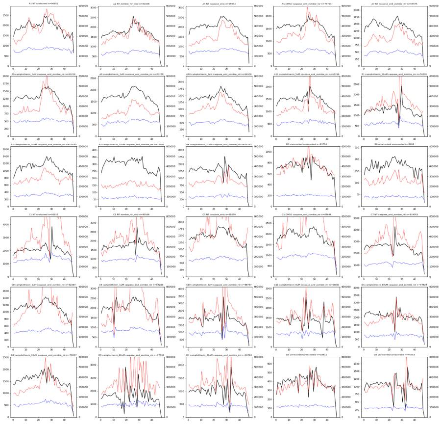
20
tool call · Bash
cd /task/work; cat > timeqc2.py <<'EOF'
import flowkit as fk, pandas as pd, numpy as np
lay=pd.read_csv('/task/inputs/plate_layout.csv')
out=[]
for _,r in lay.iterrows():
s=fk.Sample('/task/inputs/raw/'+r.file)
d=s.as_dataframe(source='raw'); d.columns=d.columns.get_level_values(0)
t=d['Time'].values
assert np.all(np.diff(t)>=0)
tend=t.max()
bw=0.5
bins=np.arange(0,np.floor(tend/bw)*bw+1e-9,bw)
h,_=np.histogram(t,bins)
# rolling median baseline (window 11 bins)
hs=pd.Series(h).rolling(11,center=True,min_periods=3).median().values
ratio=h/np.maximum(hs,1)
low=ratio<0.5; high=ratio>1.5
# events in anomalous bins
idx=np.clip(((t)//bw).astype(int),0,len(h)-1)
anom=(low|high)
ev_anom=np.mean(anom[idx]) if len(h) else 0
# gaps
gaps=np.diff(t);
# dev from global med over central 90%
cv=np.std(h[2:-2])/np.mean(h[2:-2])
# first/last 10% rate vs middle
n=len(h); first=h[:n//10].mean(); last=h[-n//10:].mean(); mid=h[n//3:2*n//3].mean()
out.append(dict(well=r.well,n=len(t),tend=round(tend,2),maxgap_ms=round(gaps.max()*1000,1),cv=round(cv,3),nlow=int(low.sum()),nhigh=int(high.sum()),pct_ev_anom=round(100*ev_anom,1),
minratio=round(ratio[1:-1].min(),2),maxratio=round(ratio[1:-1].max(),2),first_mid=round(first/mid,2),last_mid=round(last/mid,2)))
df=pd.DataFrame(out); print(df.to_string())
df.to_csv('timeqc.csv',index=False)
EOF
python timeqc2.py21
tool output
well n tend maxgap_ms cv nlow nhigh pct_ev_anom minratio maxratio first_mid last_mid 0 A1 90651 47.48 88.0 0.148 0 0 0.0 0.77 1.18 0.80 0.72 1 A2 81008 46.25 81.0 0.156 0 0 0.0 0.66 1.25 0.80 0.70 2 A3 95933 47.10 23.0 0.131 0 0 0.0 0.90 1.13 0.82 0.68 3 A5 73753 46.30 73.0 0.129 0 0 0.0 0.77 1.16 0.89 0.69 4 A7 64975 46.24 16.0 0.134 0 0 0.0 0.88 1.18 0.92 0.71 5 A8 60216 47.27 31.0 0.166 0 0 0.0 0.80 1.25 0.86 0.59 6 A9 80278 46.42 45.0 0.123 0 0 0.0 0.79 1.18 0.84 0.69 7 A10 64936 47.21 108.0 0.150 0 0 0.0 0.88 1.27 0.86 0.62 8 A11 68296 46.35 182.0 0.146 0 0 0.0 0.57 1.46 0.87 0.69 9 B1 58310 46.33 485.0 0.275 2 2 4.9 0.12 2.07 0.87 0.74 10 B2 51930 47.16 128.0 0.129 0 0 0.0 0.79 1.28 0.80 0.76 11 B3 13995 47.22 72.0 0.144 0 0 0.0 0.75 1.32 0.90 0.75 12 B4 58782 46.18 249.0 0.186 1 2 4.4 0.41 1.81 0.98 0.81 13 B5 33754 46.31 317.0 0.187 2 0 0.9 0.27 1.40 0.93 0.72 14 B6 8004 47.38 101.0 0.139 0 0 0.0 0.63 1.29 0.81 0.73 15 C1 95817 46.27 243.0 0.220 1 1 2.5 0.04 1.93 0.85 0.80 16 C2 80166 47.37 257.0 0.179 2 1 3.3 0.44 1.71 0.87 0.74 17 C3 68270 46.21 112.0 0.149 0 0 0.0 0.84 1.24 0.85 0.68 18 C5 88646 47.36 48.0 0.134 1 0 0.3 0.57 1.15 0.87 0.66 19 C7 119052 47.42 104.0 0.182 2 1 3.0 0.38 1.84 0.93 0.66 20 C8 52267 46.21 77.0 0.156 0 0 0.0 0.66 1.21 0.86 0.64 21 C9 92282 47.37 140.0 0.255 3 1 3.3 0.05 2.16 0.86 0.55 22 C10 88797 47.17 334.0 0.288 6 3 8.3 0.05 1.76 0.97 0.68 23 C11 63651 46.43 359.0 0.327 6 4 10.4 0.03 2.30 1.03 0.93 24 D1 97824 47.42 258.0 0.234 3 2 4.7 0.05 1.89 1.04 0.78 25 D2 73937 47.28 119.0 0.171 2 0 0.5 0.36 1.44 0.81 0.61 26 D3 77334 46.43 289.0 0.424 7 7 16.6 0.09 2.54 0.87 0.71 27 D4 46763 47.20 297.0 0.317 4 5 10.6 0.02 2.46 0.94 0.63 28 D5 18412 46.37 310.0 0.280 2 3 6.8 0.04 2.20 0.81 0.78 29 D6 46753 46.24 357.0 0.307 5 4 9.4 0.02 2.48 1.01 0.95
23
tool call · Bash
cd /task/work; cat > timescat.py <<'EOF'
import flowkit as fk, pandas as pd, numpy as np, matplotlib, sys
matplotlib.use('Agg'); import matplotlib.pyplot as plt
lay=pd.read_csv('/task/inputs/plate_layout.csv')
ch=sys.argv[1]; logy=ch in ('BL1-A','RL3-A')
fig,axs=plt.subplots(6,5,figsize=(25,22)); axs=axs.ravel()
for i,(_,r) in enumerate(lay.iterrows()):
s=fk.Sample('/task/inputs/raw/'+r.file)
d=s.as_dataframe(source='raw'); d.columns=d.columns.get_level_values(0)
y=d[ch].values
if logy: y=np.arcsinh(y/200)
axs[i].scatter(d['Time'],y,s=0.3,alpha=0.2,c='k',rasterized=True)
axs[i].set_title(f"{r.well} {r.treatment} {r.stain}",fontsize=10)
plt.tight_layout(); plt.savefig(f'time_{ch}.png',dpi=45)
EOF
python timescat.py SSC-A; python timescat.py FSC-A24
tool output
(Bash completed with no output)
25
tool call · Read
{
"file_path": "/task/work/time_FSC-A.png"
}26
tool output
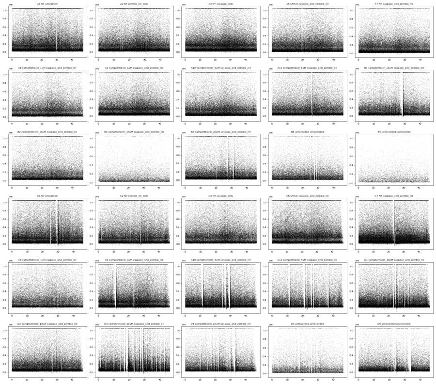
28
tool call · Read
{
"file_path": "/task/work/time_SSC-A.png"
}29
tool output
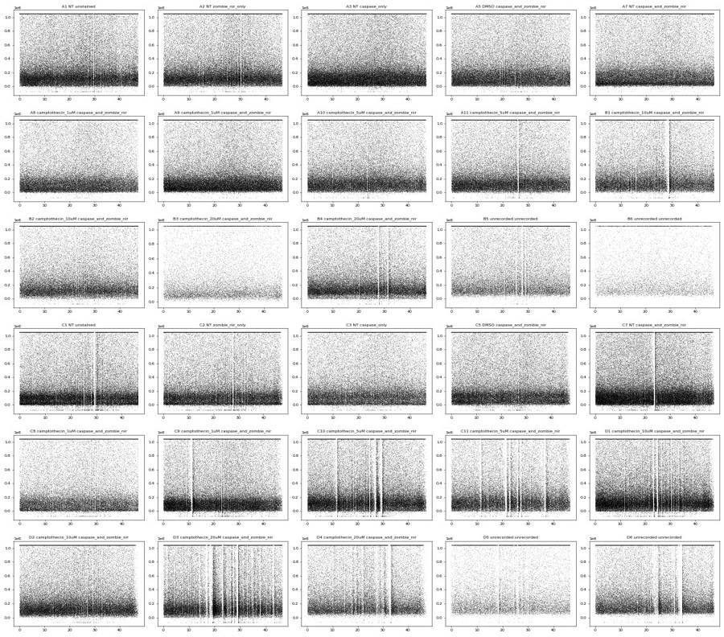
31
tool call · Bash
cd /task/work; cat > gaps.py <<'EOF'
import flowkit as fk, pandas as pd, numpy as np
lay=pd.read_csv('/task/inputs/plate_layout.csv')
out=[]
for _,r in lay.iterrows():
s=fk.Sample('/task/inputs/raw/'+r.file)
d=s.as_dataframe(source='raw'); d.columns=d.columns.get_level_values(0)
t=d['Time'].values; n=len(t)
rate=n/t.max()
g=np.diff(t)
# gap threshold: > max(50ms, 30x mean interval)
thr=max(0.05, 30/rate)
big=g>thr
bw=0.1; bins=np.arange(0,t.max(),bw); h,_=np.histogram(t,bins)
base=pd.Series(h).rolling(51,center=True,min_periods=5).median().values
low=(h<0.25*base)
burst=(h>2*base)
# events near negative scatter
out.append(dict(well=r.well,n=n,rate=int(rate),gapthr_ms=round(thr*1000),ngaps=int(big.sum()),gap_s=round(g[big].sum(),2),pct_time_gap=round(100*g[big].sum()/t.max(),1),
low01_bins=int(low.sum()),pct_time_low=round(100*low.mean(),1),burst_bins=int(burst.sum()),
ev_burst_pct=round(100*h[burst].sum()/n,1), ssc_neg=int((d['SSC-A']<0).sum()), fsc_neg=int((d['FSC-A']<0).sum())))
df=pd.DataFrame(out); print(df.to_string()); df.to_csv('gaps.csv',index=False)
EOF
python gaps.py32
tool output
well n rate gapthr_ms ngaps gap_s pct_time_gap low01_bins pct_time_low burst_bins ev_burst_pct ssc_neg fsc_neg 0 A1 90651 1909 50 2 0.14 0.3 3 0.6 0 0.0 612 49 1 A2 81008 1751 50 4 0.27 0.6 8 1.7 2 1.0 383 54 2 A3 95933 2036 50 0 0.00 0.0 1 0.2 0 0.0 395 42 3 A5 73753 1592 50 4 0.24 0.5 3 0.6 0 0.0 326 39 4 A7 64975 1405 50 0 0.00 0.0 0 0.0 0 0.0 177 24 5 A8 60216 1273 50 0 0.00 0.0 1 0.2 0 0.0 198 13 6 A9 80278 1729 50 0 0.00 0.0 1 0.2 0 0.0 185 18 7 A10 64936 1375 50 2 0.16 0.3 4 0.8 1 0.6 229 38 8 A11 68296 1473 50 1 0.18 0.4 6 1.3 2 1.1 298 48 9 B1 58310 1258 50 6 0.87 1.9 21 4.5 13 7.3 243 48 10 B2 51930 1101 50 5 0.39 0.8 9 1.9 4 2.0 250 24 11 B3 13995 296 101 0 0.00 0.0 0 0.0 1 0.3 2 1 12 B4 58782 1272 50 5 0.52 1.1 11 2.4 8 4.2 213 22 13 B5 33754 728 50 4 0.56 1.2 9 1.9 7 3.5 53 23 14 B6 8004 168 178 0 0.00 0.0 0 0.0 3 1.0 3 0 15 C1 95817 2070 50 11 1.04 2.2 21 4.5 12 6.2 1560 124 16 C2 80166 1692 50 8 0.79 1.7 18 3.8 4 2.2 1075 123 17 C3 68270 1477 50 7 0.47 1.0 5 1.1 0 0.0 595 32 18 C5 88646 1871 50 0 0.00 0.0 9 1.9 1 0.5 663 67 19 C7 119052 2510 50 9 0.65 1.4 11 2.3 4 2.7 1414 164 20 C8 52267 1131 50 6 0.39 0.8 9 1.9 1 0.5 534 50 21 C9 92282 1948 50 9 0.67 1.4 16 3.4 8 4.5 1055 106 22 C10 88797 1882 50 11 1.34 2.8 26 5.5 18 9.8 990 116 23 C11 63651 1370 50 9 1.16 2.5 31 6.7 18 9.7 582 69 24 D1 97824 2063 50 13 1.22 2.6 37 7.8 14 6.9 1013 115 25 D2 73937 1563 50 5 0.36 0.8 14 3.0 6 3.2 299 46 26 D3 77334 1665 50 15 2.20 4.7 51 11.0 42 22.6 702 101 27 D4 46763 990 50 4 0.54 1.2 21 4.4 14 7.2 107 24 28 D5 18412 397 76 7 1.18 2.5 17 3.7 14 7.9 44 7 29 D6 46753 1011 50 9 1.34 2.9 19 4.1 25 11.7 151 34
34
thinking
Flow interruptions cluster in the C/D rows, worst at D3 with about 11% of run time at low rate and 23% of events in bursts. I'm moving on to the scatter and fluorescence distributions to place the gates.
35
tool call · Bash
cd /task/work; cat > dens.py <<'EOF'
import flowkit as fk, pandas as pd, numpy as np, matplotlib, sys
matplotlib.use('Agg'); import matplotlib.pyplot as plt
from matplotlib.colors import LogNorm
lay=pd.read_csv('/task/inputs/plate_layout.csv')
xc,yc,xt,yt,out=sys.argv[1:6]
def tr(v,k):
if k=='lin': return v
if k=='asinh': return np.arcsinh(v/150)
if k=='asinh1k': return np.arcsinh(v/1000)
fig,axs=plt.subplots(6,5,figsize=(25,26)); axs=axs.ravel()
for i,(_,r) in enumerate(lay.iterrows()):
s=fk.Sample('/task/inputs/raw/'+r.file)
d=s.as_dataframe(source='raw'); d.columns=d.columns.get_level_values(0)
x=tr(d[xc].values,xt); y=tr(d[yc].values,yt)
axs[i].hist2d(x,y,bins=200,norm=LogNorm(),cmap='jet')
axs[i].set_title(f"{r.well} {r.treatment} {r.stain} n={len(d)}",fontsize=10)
plt.tight_layout(); plt.savefig(out,dpi=45)
EOF
python dens.py FSC-A SSC-A lin lin fsc_ssc.png36
tool output
(Bash completed with no output)
37
tool call · Read
{
"file_path": "/task/work/fsc_ssc.png"
}38
tool output
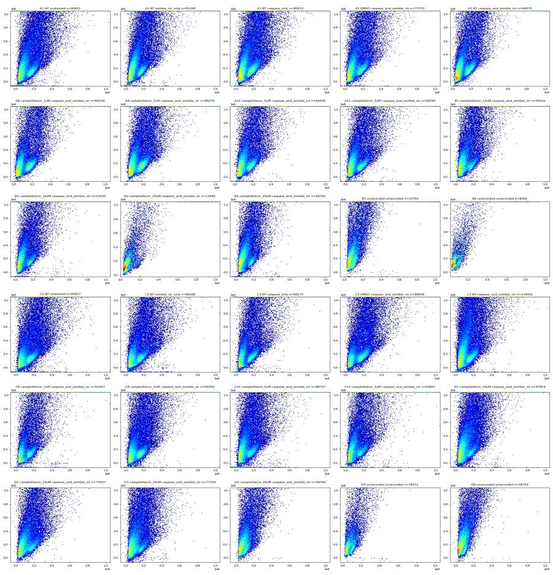
40
tool call · Bash
cd /task/work; cat > dens4.py <<'EOF'
import flowkit as fk, pandas as pd, numpy as np, matplotlib, sys
matplotlib.use('Agg'); import matplotlib.pyplot as plt
from matplotlib.colors import LogNorm
wells=sys.argv[1].split(','); xc,yc,xt,yt,out=sys.argv[2:7]
def tr(v,k):
if k=='lin': return v
if k=='log': return np.log10(np.clip(v,100,None))
if k=='asinh': return np.arcsinh(v/150)/np.log(10)
fig,axs=plt.subplots(1,len(wells),figsize=(6*len(wells),5.5)); axs=np.atleast_1d(axs)
for ax,w in zip(axs,wells):
s=fk.Sample(f'/task/inputs/raw/Caspase_primaryneurons_caspase_Group_{w}.fcs')
d=s.as_dataframe(source='raw'); d.columns=d.columns.get_level_values(0)
x=tr(d[xc].values,xt); y=tr(d[yc].values,yt)
ax.hist2d(x,y,bins=256,norm=LogNorm(),cmap='jet'); ax.set_title(w); ax.set_xlabel(xc+' '+xt); ax.set_ylabel(yc+' '+yt); ax.grid(alpha=.3)
plt.tight_layout(); plt.savefig(out,dpi=60)
EOF
python dens4.py A1,A7,B4,C7,D5 FSC-A SSC-A log log fs_log.png41
tool output
(Bash completed with no output)
42
tool call · Read
{
"file_path": "/task/work/fs_log.png"
}43
tool output
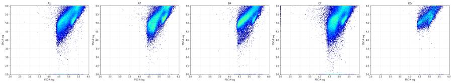
45
tool call · Bash
cd /task/work; cat > dens5.py <<'EOF'
import flowkit as fk, pandas as pd, numpy as np, matplotlib, sys
matplotlib.use('Agg'); import matplotlib.pyplot as plt
from matplotlib.colors import LogNorm
wells=sys.argv[1].split(','); xc,yc,out=sys.argv[2:5]; xm=float(sys.argv[5]); ym=float(sys.argv[6])
ncol=5; nrow=int(np.ceil(len(wells)/ncol))
fig,axs=plt.subplots(nrow,ncol,figsize=(6*ncol,5.5*nrow)); axs=np.atleast_1d(axs).ravel()
for ax,w in zip(axs,wells):
s=fk.Sample(f'/task/inputs/raw/Caspase_primaryneurons_caspase_Group_{w}.fcs')
d=s.as_dataframe(source='raw'); d.columns=d.columns.get_level_values(0)
x=d[xc].values; y=d[yc].values
ax.hist2d(x,y,bins=200,range=[[0,xm],[0,ym]],norm=LogNorm(),cmap='jet'); ax.set_title(w); ax.set_xlabel(xc); ax.set_ylabel(yc); ax.grid(alpha=.4)
plt.tight_layout(); plt.savefig(out,dpi=50)
EOF
python dens5.py A1,A3,A7,A9,B2,B4,B6,C1,C7,D5 FSC-A SSC-A fs_lin.png 600000 60000046
tool output
(Bash completed with no output)
47
tool call · Read
{
"file_path": "/task/work/fs_lin.png"
}48
tool output
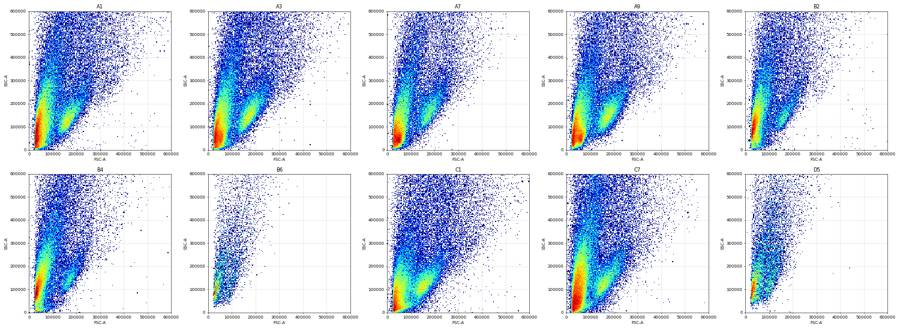
50
thinking
The main cell cloud is a tilted ellipse near FSC 190k / SSC 150k, with debris at low FSC, and wells B6 and D5 have almost none. I'm drafting the Cells ellipse to overlay on every well next.
51
tool call · Bash
cd /task/work; cat > common.py <<'EOF'
import flowkit as fk, pandas as pd, numpy as np
lay=pd.read_csv('/task/inputs/plate_layout.csv')
_cache={}
def load(w):
if w not in _cache:
s=fk.Sample(f'/task/inputs/raw/Caspase_primaryneurons_caspase_Group_{w}.fcs')
d=s.as_dataframe(source='raw'); d.columns=d.columns.get_level_values(0)
_cache[w]=d
return _cache[w]
def ell_cov(a,b,theta_deg):
th=np.deg2rad(theta_deg); R=np.array([[np.cos(th),-np.sin(th)],[np.sin(th),np.cos(th)]])
return R@np.diag([a*a,b*b])@R.T
def in_ell(x,y,c,cov):
inv=np.linalg.inv(cov); dx=np.vstack([x-c[0],y-c[1]])
return np.einsum('ij,ik,kj->j',dx,inv,dx)<=1
def ell_xy(c,a,b,th):
t=np.linspace(0,2*np.pi,200); th=np.deg2rad(th)
x=a*np.cos(t); y=b*np.sin(t)
return c[0]+x*np.cos(th)-y*np.sin(th), c[1]+x*np.sin(th)+y*np.cos(th)
EOF
cat > cells_ov.py <<'EOF'
from common import *; import matplotlib,sys; matplotlib.use('Agg'); import matplotlib.pyplot as plt
from matplotlib.colors import LogNorm
c=(float(sys.argv[1]),float(sys.argv[2])); a=float(sys.argv[3]); b=float(sys.argv[4]); th=float(sys.argv[5])
cov=ell_cov(a,b,th)
fig,axs=plt.subplots(6,5,figsize=(25,26)); axs=axs.ravel()
for ax,(_,r) in zip(axs,lay.iterrows()):
d=load(r.well); x=d['FSC-A'].values; y=d['SSC-A'].values
m=in_ell(x,y,c,cov)
ax.hist2d(x,y,bins=200,range=[[0,6e5],[0,6e5]],norm=LogNorm(),cmap='jet')
ex,ey=ell_xy(c,a,b,th); ax.plot(ex,ey,'k-',lw=2)
ax.set_title(f"{r.well} {r.treatment} {r.stain} cells={m.sum()} ({100*m.mean():.1f}%)",fontsize=10)
plt.tight_layout(); plt.savefig('cells_ov.png',dpi=45)
EOF
python cells_ov.py 195000 160000 110000 42000 5252
tool output
(Bash completed with no output)
53
tool call · Read
{
"file_path": "/task/work/cells_ov.png"
}54
tool output
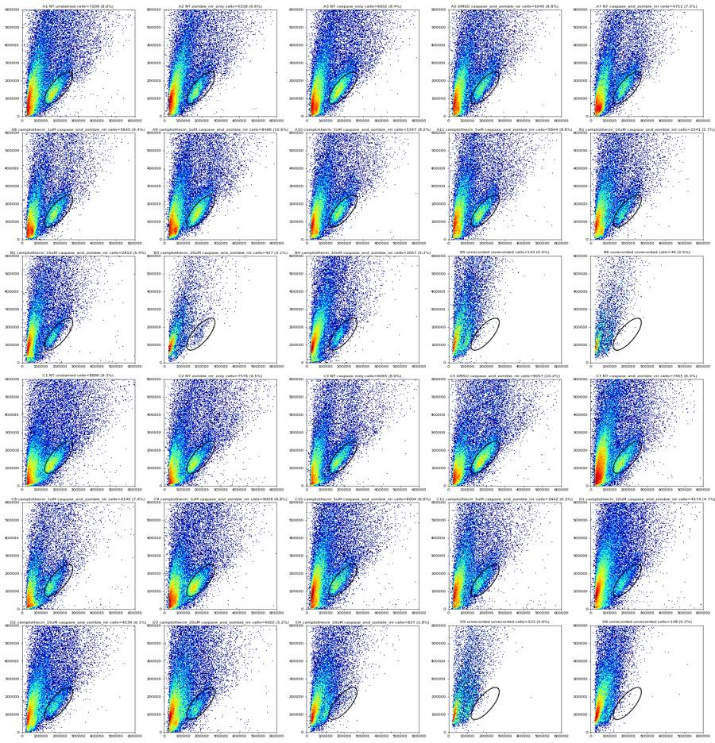
56
tool call · Bash
cd /task/work; cat > pool_cells.py <<'EOF'
from common import *; import matplotlib,sys; matplotlib.use('Agg'); import matplotlib.pyplot as plt
from matplotlib.colors import LogNorm
groups=[['A1','A2','A3','A5','A7'],['C1','C2','C3','C5','C7'],['A8','A9','A10','A11','B1','B2','B4'],['C8','C9','C10','C11','D1','D2','D3']]
fig,axs=plt.subplots(1,4,figsize=(28,7))
E=[((195000,160000),110000,42000,52,'k'),((195000,160000),125000,50000,52,'m')]
for ax,g in zip(axs,groups):
x=np.concatenate([load(w)['FSC-A'].values for w in g]); y=np.concatenate([load(w)['SSC-A'].values for w in g])
H,xe,ye=np.histogram2d(x,y,bins=160,range=[[0,4e5],[0,4e5]])
ax.imshow(np.log10(H.T+1),origin='lower',extent=[0,4e5,0,4e5],cmap='jet',aspect='auto')
from scipy.ndimage import gaussian_filter
Hs=gaussian_filter(H,1.5)
ax.contour((xe[:-1]+xe[1:])/2,(ye[:-1]+ye[1:])/2,np.log10(Hs.T+1),levels=10,colors='w',linewidths=0.6)
for c,a,b,th,col in E:
ex,ey=ell_xy(c,a,b,th); ax.plot(ex,ey,col+'-',lw=2)
ax.set_title(','.join(g)); ax.grid(alpha=.3)
plt.tight_layout(); plt.savefig('pool_cells.png',dpi=50)
EOF
python pool_cells.py57
tool output
(Bash completed with no output)
58
tool call · Read
{
"file_path": "/task/work/pool_cells.png"
}59
tool output
61
tool call · Bash
cd /task/work; python - <<'EOF'
from common import *
ws=['A1','A2','A3','A5','A7','C1','C2','C3','C5','C7','A8','A9','C8','C9']
x=np.concatenate([load(w)['FSC-A'].values for w in ws]); y=np.concatenate([load(w)['SSC-A'].values for w in ws])
c=np.array([185000.,150000.]); cov=ell_cov(115000,45000,52)
for it in range(15):
m=in_ell(x,y,c,cov)
X=np.vstack([x[m],y[m]])
c=X.mean(1); S=np.cov(X)
# for a truncated 2D gaussian at r=1 of k*sigma, re-inflate: use cov scaled so ellipse = 2.2 sigma
cov=S*2.2**2/ (1-0) # heuristic
w,v=np.linalg.eigh(cov)
print(it, c.round(), np.sqrt(w).round(), np.degrees(np.arctan2(v[1,1],v[0,1])).round(1), m.mean().round(4))
EOF62
tool output
0 [173322. 145517.] [ 38466. 107398.] 54.8 0.0928 1 [169983. 143517.] [ 35786. 101711.] 56.2 0.0881 2 [168622. 142257.] [34081. 96857.] 57.1 0.0835 3 [167902. 141299.] [32803. 92859.] 57.9 0.0796 4 [167459. 140503.] [31773. 89620.] 58.4 0.0764 5 [167116. 139751.] [30898. 87072.] 58.8 0.0737 6 [166844. 139090.] [30179. 84915.] 59.1 0.0715 7 [166627. 138504.] [29553. 83118.] 59.3 0.0695 8 [166453. 137999.] [28992. 81551.] 59.5 0.0678 9 [166272. 137547.] [28524. 80193.] 59.6 0.0664 10 [166155. 137205.] [28119. 79073.] 59.8 0.0651 11 [166046. 136904.] [27778. 78165.] 59.9 0.0641 12 [165932. 136652.] [27481. 77425.] 60.0 0.0632 13 [165850. 136439.] [27223. 76776.] 60.0 0.0625 14 [165780. 136276.] [27010. 76226.] 60.1 0.0618
64
tool call · Bash
cd /task/work; sed -i "s/^E=.*/E=[((195000,160000),110000,42000,52,'k'),((178000,142000),115000,42000,54,'m'),((180000,145000),105000,38000,55,'w')]/" pool_cells.py; python pool_cells.py
65
tool output
(Bash completed with no output)
66
tool call · Read
{
"file_path": "/task/work/pool_cells.png"
}67
tool output
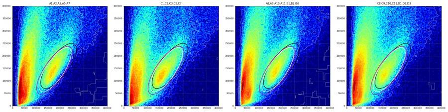
69
agent
The Cells ellipse is set (centre FSC 178k / SSC 142k, semi-axes 115k × 42k, tilted 54°). Next is the singlet gate on SSC-A vs SSC-H inside Cells.
70
tool call · Bash
cd /task/work; cat >> common.py <<'EOF'
CELLS=dict(c=(178000.,142000.),a=115000.,b=42000.,th=54.)
def cells_mask(d):
return in_ell(d['FSC-A'].values,d['SSC-A'].values,CELLS['c'],ell_cov(CELLS['a'],CELLS['b'],CELLS['th']))
EOF
cat > singlets.py <<'EOF'
from common import *; import matplotlib,sys; matplotlib.use('Agg'); import matplotlib.pyplot as plt
from matplotlib.colors import LogNorm
poly=eval(sys.argv[1]) if len(sys.argv)>1 else None
fig,axs=plt.subplots(6,5,figsize=(25,26)); axs=axs.ravel()
from matplotlib.path import Path
for ax,(_,r) in zip(axs,lay.iterrows()):
d=load(r.well); m=cells_mask(d)
x=d['SSC-A'].values[m]; y=d['SSC-H'].values[m]
ax.hist2d(x,y,bins=150,range=[[0,3.2e5],[0,2.5e5]],norm=LogNorm(),cmap='jet')
t=''
if poly:
P=np.array(poly+[poly[0]]); ax.plot(P[:,0],P[:,1],'k-',lw=2)
inn=Path(poly).contains_points(np.c_[x,y]); t=f' sing={inn.sum()} ({100*inn.mean():.1f}%)'
ax.set_title(f"{r.well} {r.treatment} cells={m.sum()}{t}",fontsize=10); ax.grid(alpha=.3)
plt.tight_layout(); plt.savefig('singlets.png',dpi=45)
EOF
python singlets.py71
tool output
(Bash completed with no output)
72
tool call · Read
{
"file_path": "/task/work/singlets.png"
}73
tool output
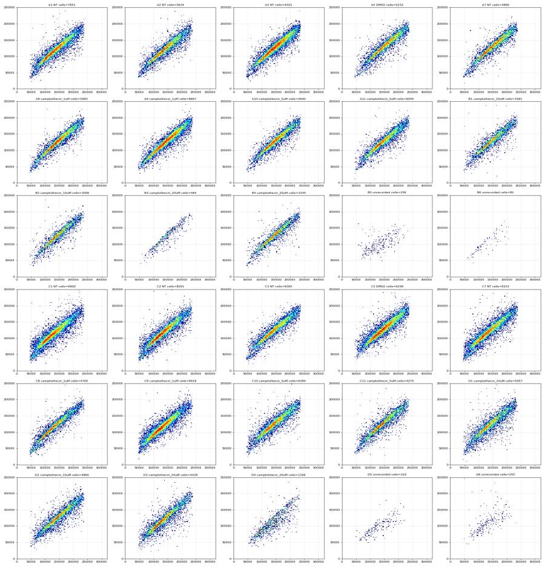
75
tool call · Bash
cd /task/work; python - <<'EOF'
from common import *
ws=[w for w in lay.well]
r=[];A=[]
for w in ws:
d=load(w); m=cells_mask(d); r.append(d['SSC-H'].values[m]/d['SSC-A'].values[m]); A.append(d['SSC-A'].values[m])
r=np.concatenate(r); A=np.concatenate(A)
print(np.percentile(r,[0.5,1,2,5,10,25,50,75,90,95,98,99,99.5]).round(3))
print(np.percentile(A,[0,0.5,1,50,99,99.5,100]).round())
h,e=np.histogram(r,bins=np.arange(0.3,1.2,0.02))
for a,b in zip(e,h): print(round(a,2),b)
# ratio by SSC-A bin
for lo in range(40000,260000,20000):
m=(A>=lo)&(A<lo+20000); print(lo, m.sum(), np.percentile(r[m],[2,5,50,95,98]).round(3))
EOF76
tool output (error)
Exit code 1
[0.528 0.582 0.641 0.714 0.764 0.822 0.868 0.912 0.97 1.045 1.185 1.313
1.474]
[ 45758. 53690. 57906. 141940. 229567. 232617. 238153.]
0.3 10
0.32 7
0.34 15
0.36 22
0.38 37
0.4 39
0.42 61
0.44 68
0.46 89
0.48 148
0.5 177
0.52 235
0.54 233
0.56 319
0.58 437
0.6 498
0.62 611
0.64 873
0.66 1083
0.68 1445
0.7 1935
0.72 2532
0.74 3540
0.76 5115
0.78 7240
0.8 10521
0.82 14026
0.84 17329
0.86 18964
0.88 18240
0.9 14401
0.92 9608
0.94 5799
0.96 3735
0.98 2493
1.0 1835
1.02 1424
1.04 1128
1.06 899
1.08 774
1.1 618
1.12 535
1.14 471
1.16 376
40000 1927 [0.621 0.689 0.888 1.727 1.979]
60000 6925 [0.623 0.682 0.948 1.433 1.62 ]
80000 14531 [0.646 0.719 0.928 1.192 1.307]
100000 22972 [0.669 0.76 0.904 1.065 1.153]
120000 27550 [0.673 0.753 0.884 0.994 1.058]
140000 26004 [0.665 0.736 0.865 0.955 1.006]
160000 21709 [0.644 0.713 0.847 0.931 0.973]
180000 15950 [0.617 0.69 0.831 0.912 0.947]
200000 10693 [0.573 0.664 0.817 0.895 0.925]
220000 4861 [0.565 0.658 0.802 0.878 0.905]
Traceback (most recent call last):
File "<stdin>", line 13, in <module>
File "/usr/local/lib/python3.12/site-packages/numpy/lib/function_base.py", line 4283, in percentile
return _quantile_unchecked(
^^^^^^^^^^^^^^^^^^^^
File "/usr/local/lib/python3.12/site-packages/numpy/lib/function_base.py", line 4555, in _quantile_unchecked
return _ureduce(a,
^^^^^^^^^^^
File "/usr/local/lib/python3.12/site-packages/numpy/lib/function_base.py", line 3823, in _ureduce
r = func(a, **kwargs)
^^^^^^^^^^^^^^^^^
File "/usr/local/lib/python3.12/site-packages/numpy/lib/function_base.py", line 4722, in _quantile_ureduce_func
result = _quantile(arr,
^^^^^^^^^^^^^^
File "/usr/local/lib/python3.12/site-packages/numpy/lib/function_base.py", line 4831, in _quantile
slices_having_nans = np.isnan(arr[-1, ...])
~~~^^^^^^^^^
IndexError: index -1 is out of bounds for axis 0 with size 078
tool call · Bash
cd /task/work; python singlets.py "[(35000,24000),(270000,186000),(270000,262000),(35000,55000)]"
79
tool output
(Bash completed with no output)
80
tool call · Read
{
"file_path": "/task/work/singlets.png"
}81
tool output
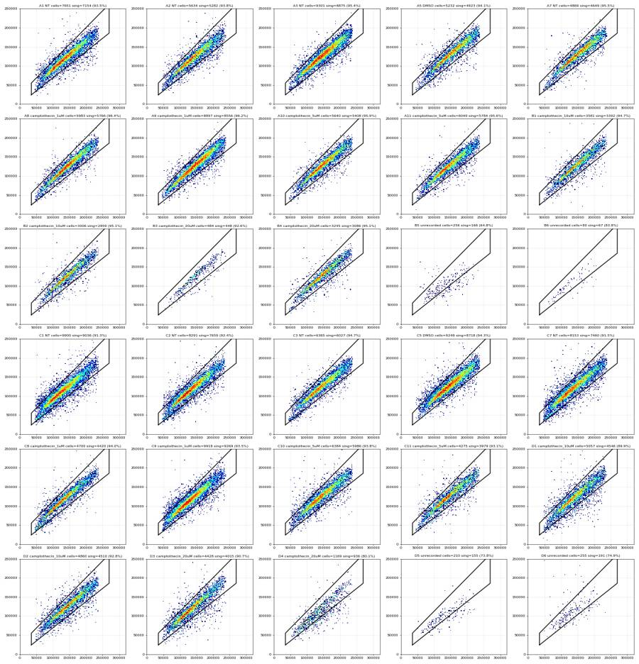
83
agent
Singlet polygon keeps 90–96% of Cells in normal wells. Now I'm looking at Zombie NIR (RL3-A) and caspase (BL1-A) inside Single_Cells to place the fluorescence boundaries.
84
tool call · Bash
cd /task/work; cat >> common.py <<'EOF'
from matplotlib.path import Path as _P
SING=[(35000,24000),(270000,186000),(270000,262000),(35000,55000)]
def sing_mask(d):
m=cells_mask(d)
m2=_P(SING).contains_points(np.c_[d['SSC-A'].values,d['SSC-H'].values])
return m&m2
EOF
cat > fl_hist.py <<'EOF'
from common import *; import matplotlib,sys; matplotlib.use('Agg'); import matplotlib.pyplot as plt
from matplotlib.colors import LogNorm
def T(v): return np.arcsinh(v/200)/np.log(10)
fig,axs=plt.subplots(6,5,figsize=(25,26)); axs=axs.ravel()
ch=sys.argv[1]
for ax,(_,r) in zip(axs,lay.iterrows()):
d=load(r.well); m=sing_mask(d)
x=T(d[ch].values[m]); y=d['SSC-A'].values[m]
ax.hist2d(x,y,bins=[120,80],range=[[-1,4],[0,2.8e5]],norm=LogNorm(),cmap='jet')
ax.set_title(f"{r.well} {r.treatment} {r.stain} n={m.sum()}",fontsize=10); ax.grid(alpha=.3)
tk=[-1000,0,1000,1e4,1e5]; ax.set_xticks(T(np.array(tk))); ax.set_xticklabels([str(int(t)) for t in tk])
plt.tight_layout(); plt.savefig(f'fl_{ch}.png',dpi=45)
EOF
python fl_hist.py RL3-A; python fl_hist.py BL1-A85
tool output
(Bash completed with no output)
86
tool call · Read
{
"file_path": "/task/work/fl_RL3-A.png"
}87
tool output
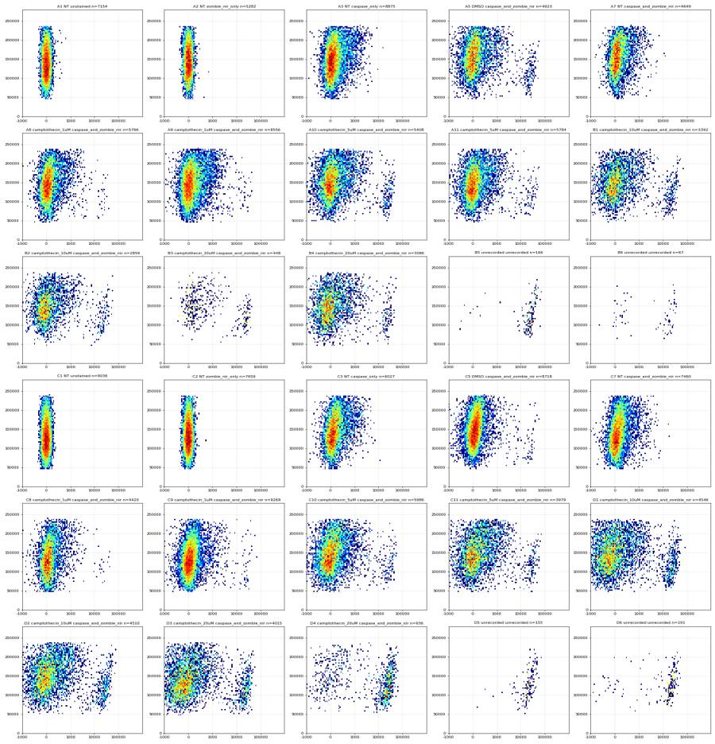
89
tool call · Read
{
"file_path": "/task/work/fl_BL1-A.png"
}90
tool output
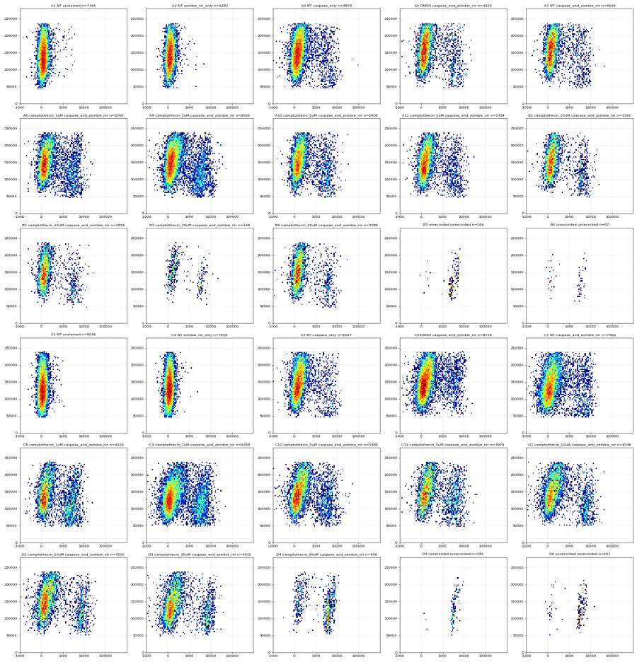
92
tool call · Bash
cd /task/work; python - <<'EOF'
from common import *
rows=[]
for _,r in lay.iterrows():
d=load(r.well); s=sing_mask(d)
R=d['RL3-A'].values; B=d['BL1-A'].values
rows.append(dict(well=r.well,stain=r.stain[:12],trt=r.treatment[:16],
all_RL3gt5k=round(100*np.mean(R>5000),2), all_BL1gt2k=round(100*np.mean(B>2000),2),
all_RL3_p50=int(np.median(R)), all_RL3_p90=int(np.percentile(R,90)),all_BL1_p50=int(np.median(B)),all_BL1_p90=int(np.percentile(B,90)),
s_RL3_p5=int(np.percentile(R[s],5)),s_RL3_p50=int(np.median(R[s])),s_RL3_p95=int(np.percentile(R[s],95)),s_RL3_p99=int(np.percentile(R[s],99)),
s_RL3gt5k=round(100*np.mean(R[s]>5000),2),
s_BL1_p5=int(np.percentile(B[s],5)),s_BL1_p50=int(np.median(B[s])),s_BL1_p95=int(np.percentile(B[s],95)),s_BL1_p99=int(np.percentile(B[s],99)),
s_BL1gt2k=round(100*np.mean(B[s]>2000),2)))
pd.set_option('display.width',300); print(pd.DataFrame(rows).to_string())
EOF93
tool output
well stain trt all_RL3gt5k all_BL1gt2k all_RL3_p50 all_RL3_p90 all_BL1_p50 all_BL1_p90 s_RL3_p5 s_RL3_p50 s_RL3_p95 s_RL3_p99 s_RL3gt5k s_BL1_p5 s_BL1_p50 s_BL1_p95 s_BL1_p99 s_BL1gt2k 0 A1 unstained NT 0.53 19.67 51 516 260 4357 -78 4 90 130 0.00 -45 45 166 338 0.13 1 A2 zombie_nir_o NT 0.43 18.14 48 464 274 3953 -79 4 89 130 0.00 -40 49 179 303 0.09 2 A3 caspase_only NT 11.84 45.88 378 6494 1487 14290 -98 45 715 1865 0.08 -45 83 1824 6225 4.69 3 A5 caspase_and_ DMSO 29.58 50.24 1083 38024 2033 16795 -237 27 1767 28552 3.60 -36 91 3313 7563 8.37 4 A7 caspase_and_ NT 14.47 55.12 413 9865 2422 14306 -90 56 676 1903 0.15 -36 85 3311 7832 7.51 5 A8 caspase_and_ camptothecin_1uM 17.20 52.47 561 12842 2414 19866 -104 44 750 2832 0.57 -29 111 4347 7638 12.89 6 A9 caspase_and_ camptothecin_1uM 18.52 48.30 559 14714 1748 19327 -133 41 922 3090 0.67 -34 116 5050 10864 13.86 7 A10 caspase_and_ camptothecin_5uM 36.73 47.08 1508 55467 1595 15360 -260 24 2259 28857 3.75 -29 107 3744 7055 10.08 8 A11 caspase_and_ camptothecin_5uM 30.59 47.38 1097 33062 1628 18565 -203 23 982 16850 1.68 -30 105 3730 7629 8.40 9 B1 caspase_and_ camptothecin_10u 47.13 51.08 3770 90138 2176 16280 -380 19 14121 34900 6.40 -35 94 4442 7306 11.65 10 B2 caspase_and_ camptothecin_10u 47.91 41.08 4369 54186 1001 13367 -245 8 4518 31101 4.79 -33 80 3259 6367 9.13 11 B3 caspase_and_ camptothecin_20u 76.32 39.59 14548 88037 1067 8510 -86 228 28711 36203 20.09 19 152 5008 7136 24.78 12 B4 caspase_and_ camptothecin_20u 60.41 39.86 8421 75773 967 13539 -356 -16 2180 28407 3.76 -29 92 3641 7109 8.62 13 B5 unrecorded unrecorded 94.95 54.48 38241 200168 2381 10276 571 25517 45586 64355 93.98 1315 2890 5655 6554 93.37 14 B6 unrecorded unrecorded 87.09 47.11 18375 85687 1722 7045 -4 12608 30962 36708 59.70 23 2876 5518 6235 62.69 15 C1 unstained NT 0.75 22.44 51 675 222 5274 -81 2 87 125 0.00 -55 30 128 226 0.00 16 C2 zombie_nir_o NT 0.74 21.57 49 674 197 5092 -82 2 89 126 0.00 -52 34 132 202 0.01 17 C3 caspase_only NT 18.35 50.18 777 12604 2020 20891 -93 68 774 2000 0.08 -45 94 1935 7013 4.93 18 C5 caspase_and_ DMSO 17.91 54.92 825 13350 2869 30581 -128 46 331 2424 0.75 -63 92 3071 7476 6.65 19 C7 caspase_and_ NT 13.08 66.30 381 7256 5127 25343 -98 54 561 1882 0.13 -129 68 4821 10359 8.98 20 C8 caspase_and_ camptothecin_1uM 19.64 52.81 687 16480 2359 22066 -112 47 585 2152 0.48 -31 141 4528 7482 19.77 21 C9 caspase_and_ camptothecin_1uM 17.85 55.72 690 12192 3093 32134 -134 29 406 2524 0.58 -88 94 5497 9678 17.11 22 C10 caspase_and_ camptothecin_5uM 35.88 48.10 1729 40397 1742 21867 -309 13 1264 28936 2.46 -56 119 4390 9368 11.43 23 C11 caspase_and_ camptothecin_5uM 43.85 50.34 3217 65256 2050 21531 -322 62 3116 34421 4.12 -25 159 5300 10169 17.52 24 D1 caspase_and_ camptothecin_10u 56.00 46.45 7207 83114 1474 23352 -643 -37 22155 37206 9.30 -68 136 7273 13589 15.79 25 D2 caspase_and_ camptothecin_10u 50.07 51.12 5023 74710 2193 24896 - … [1,005 more characters not shown]
95
thinking
Both control wells look off in the fluorescence data: A2/C2 (Zombie NIR only) read like unstained cells, while A3/C3 (caspase only) carry Zombie signal. I'm now finding the valley between Zombie-negative and Zombie-bright events to place the Live boundary.
96
tool call · Bash
cd /task/work; cat > valley.py <<'EOF'
from common import *; import matplotlib,sys; matplotlib.use('Agg'); import matplotlib.pyplot as plt
def T(v): return np.arcsinh(v/200)/np.log(10)
ch=sys.argv[1]
groups={'unstained A1,C1':['A1','C1'],'zombie-only A2,C2':['A2','C2'],'casp-only A3,C3':['A3','C3'],'NT/DMSO both':['A5','A7','C5','C7'],
'CPT1-5':['A8','A9','A10','A11','C8','C9','C10','C11'],'CPT10-20':['B1','B2','B3','B4','D1','D2','D3','D4'],'unrec':['B5','B6','D5','D6']}
fig,ax=plt.subplots(1,1,figsize=(14,6))
bins=np.linspace(-1.5,4.5,241)
for k,ws in groups.items():
v=np.concatenate([load(w)[ch].values[sing_mask(load(w))] for w in ws])
h,_=np.histogram(T(v),bins); ax.plot((bins[1:]+bins[:-1])/2,h/h.sum(),label=f'{k} n={len(v)}')
ax.set_yscale('log'); ax.legend()
tk=[-1000,-100,0,100,300,1000,3000,10000,30000,100000]; ax.set_xticks(T(np.array(tk))); ax.set_xticklabels([str(t) for t in tk]); ax.grid(alpha=.4)
ax.set_title(ch+' singlets'); plt.tight_layout(); plt.savefig(f'valley_{ch}.png',dpi=60)
EOF
python valley.py RL3-A; python valley.py BL1-A97
tool output
(Bash completed with no output)
98
tool call · Read
{
"file_path": "/task/work/valley_RL3-A.png"
}99
tool output
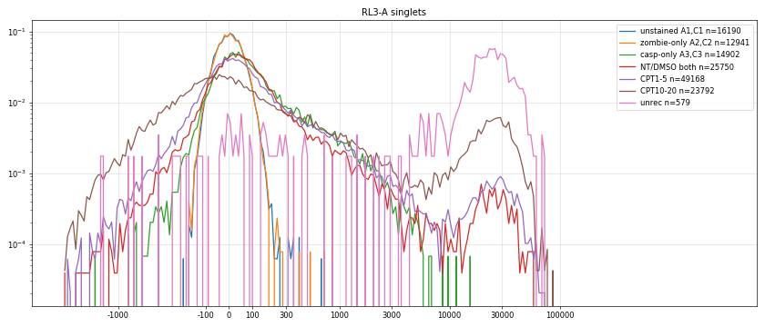
101
tool call · Read
{
"file_path": "/task/work/valley_BL1-A.png"
}102
tool output
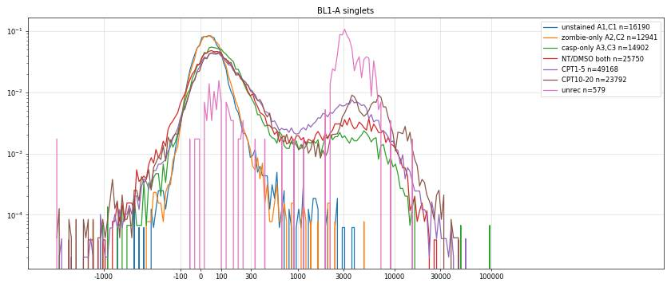
104
tool call · Bash
cd /task/work; cat > bl_rl.py <<'EOF'
from common import *; import matplotlib,sys; matplotlib.use('Agg'); import matplotlib.pyplot as plt
from matplotlib.colors import LogNorm
def T(v): return np.arcsinh(v/200)/np.log(10)
ws=sys.argv[1].split(','); gate=sys.argv[2]
fig,axs=plt.subplots(2,int(np.ceil(len(ws)/2)),figsize=(5.5*np.ceil(len(ws)/2),10)); axs=axs.ravel()
tk=[-1000,0,1000,1e4,1e5]
for ax,w in zip(axs,ws):
d=load(w); m=np.ones(len(d),bool) if gate=='all' else sing_mask(d)
ax.hist2d(T(d['BL1-A'].values[m]),T(d['RL3-A'].values[m]),bins=150,range=[[-1,4],[-1,4]],norm=LogNorm(),cmap='jet')
ax.set_xticks(T(np.array(tk))); ax.set_xticklabels([str(int(t)) for t in tk]); ax.set_yticks(T(np.array(tk))); ax.set_yticklabels([str(int(t)) for t in tk])
ax.set_xlabel('BL1-A caspase'); ax.set_ylabel('RL3-A zombie'); ax.set_title(f'{w} {gate} n={m.sum()}'); ax.grid(alpha=.3)
plt.tight_layout(); plt.savefig(f'blrl_{gate}.png',dpi=50)
EOF
python bl_rl.py A1,A2,A3,A7,A5,C1,C2,C3,C7,C5 all105
tool output
(Bash completed with no output)
106
tool call · Read
{
"file_path": "/task/work/blrl_all.png"
}107
tool output
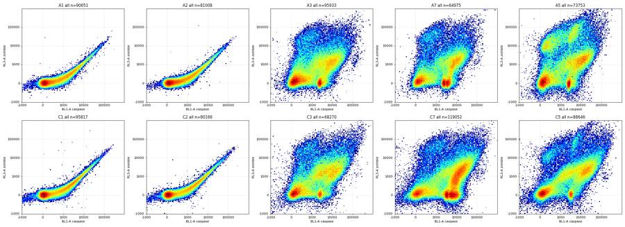
109
tool call · Bash
cd /task/work; python bl_rl.py A1,A2,A3,A7,A9,B1,B4,B5,C1,C2,C3,C7,C9,D1,D3,D4 sing
110
tool output
(Bash completed with no output)
111
tool call · Read
{
"file_path": "/task/work/blrl_sing.png"
}112
tool output
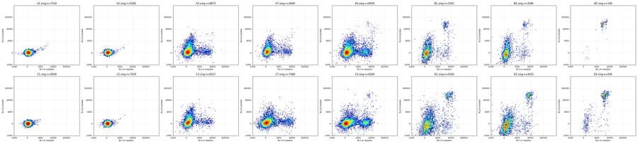
114
agent
The plots show a clean dead cluster (RL3 ~20k–40k) and caspase-positive live cells at BL1 1k–10k. Now I'm checking how sensitive the counts are to the exact Live and Caspase_pos cut-offs.
115
tool call · Bash
cd /task/work; python - <<'EOF'
from common import *
print('BL1 percentiles in singlets of unstained/zombie-only, RL3<5000')
for w in ['A1','A2','C1','C2','A3','C3','A7','C7']:
d=load(w); m=sing_mask(d)&(d['RL3-A'].values<5000); b=d['BL1-A'].values[m]
print(w, m.sum(), np.percentile(b,[99,99.5,99.9]).round(), [round(100*np.mean(b>t),2) for t in (500,700,1000,1500,2000)])
print('RL3 counts between thresholds in singlets')
for w in ['A7','C7','A10','B1','B2','B4','C10','C11','D1','D2','D3','D4']:
d=load(w); m=sing_mask(d); r=d['RL3-A'].values[m]
print(w, m.sum(), [int(np.sum(r<t)) for t in (2000,3000,4000,5000,6000,8000,10000)])
EOF116
tool output
BL1 percentiles in singlets of unstained/zombie-only, RL3<5000 A1 7154 [ 338. 612. 2326.] [0.59, 0.46, 0.41, 0.22, 0.13] A2 5282 [ 303. 413. 1574.] [0.4, 0.28, 0.17, 0.11, 0.09] C1 9036 [226. 320. 584.] [0.18, 0.06, 0.02, 0.0, 0.0] C2 7659 [202. 250. 477.] [0.1, 0.05, 0.04, 0.01, 0.01] A3 8868 [ 6172. 7705. 11878.] [7.98, 6.92, 6.21, 5.42, 4.67] C3 6022 [ 6818. 8621. 12301.] [8.82, 7.79, 6.81, 5.6, 4.92] A7 4642 [ 7514. 8880. 10654.] [11.87, 10.77, 9.82, 8.68, 7.41] C7 7450 [10297. 12053. 17339.] [13.89, 12.39, 11.14, 9.85, 8.97] RL3 counts between thresholds in singlets A7 4649 [4607, 4630, 4641, 4642, 4645, 4647, 4647] C7 7460 [7399, 7431, 7443, 7450, 7453, 7458, 7458] A10 5408 [5118, 5176, 5192, 5205, 5210, 5214, 5222] B1 3392 [3126, 3156, 3167, 3175, 3181, 3191, 3195] B2 2859 [2677, 2705, 2714, 2722, 2724, 2732, 2738] B4 3086 [2926, 2951, 2961, 2970, 2973, 2975, 2982] C10 5986 [5758, 5802, 5824, 5839, 5847, 5854, 5861] C11 3979 [3723, 3775, 3800, 3815, 3823, 3834, 3842] D1 4546 [4051, 4099, 4112, 4123, 4133, 4149, 4162] D2 4510 [3995, 4048, 4079, 4093, 4109, 4124, 4139] D3 4015 [3532, 3563, 3574, 3585, 3594, 3611, 3626] D4 936 [297, 308, 317, 322, 327, 341, 355]
118
tool call · Bash
cd /task/work; python - <<'EOF'
from common import *
mn=[];mx=[]
for w in lay.well:
d=load(w); m=sing_mask(d)
mn.append(d['RL3-A'].values[m].min()); mx.append(d['BL1-A'].values[m].max())
s=d['SSC-A'].values[m]
print('RL3 min in singlets per well', np.round(mn)); print('BL1 max', np.round(mx))
print('global data min RL3', min(load(w)['RL3-A'].min() for w in lay.well), 'BL1', min(load(w)['BL1-A'].min() for w in lay.well))
EOF119
tool output
RL3 min in singlets per well [ -216. -191. -784. -10738. -666. -908. -1119. -6504. -9771. -50576. -2480. -544. -6688. -1478. -423. -183. -184. -5598. -2083. -2190. -1589. -33174. -4656. -3885. -10566. -5444. -58480. -11380. 94. -45486.] BL1 max [ 3786. 4889. 95418. 22448. 45141. 26468. 56019. 32511. 30630. 24716. 27573. 23179. 28833. 7163. 6394. 1115. 2449. 16104. 25125. 21807. 24414. 46766. 56083. 39381. 46261. 39352. 40198. 13143. 9175. 15192.] global data min RL3 -65536.0 BL1 -65536.0
121
tool call · Bash
cd /task/work; python - <<'EOF'
from common import *
for w in lay.well:
d=load(w); m=sing_mask(d); r=d['RL3-A'].values[m]; n=m.sum()
print(w, n, [int(np.sum(r<t)) for t in (-500,-1000,-2000,-3000,-5000,-10000)])
EOF122
tool output
A1 7154 [0, 0, 0, 0, 0, 0] A2 5282 [0, 0, 0, 0, 0, 0] A3 8875 [5, 0, 0, 0, 0, 0] A5 4923 [65, 17, 9, 7, 2, 1] A7 4649 [2, 0, 0, 0, 0, 0] A8 5766 [4, 0, 0, 0, 0, 0] A9 8556 [22, 2, 0, 0, 0, 0] A10 5408 [95, 20, 9, 5, 2, 0] A11 5784 [54, 10, 4, 2, 1, 0] B1 3392 [114, 43, 15, 12, 9, 4] B2 2859 [38, 4, 1, 0, 0, 0] B3 448 [1, 0, 0, 0, 0, 0] B4 3086 [76, 15, 3, 2, 1, 0] B5 166 [1, 1, 0, 0, 0, 0] B6 67 [0, 0, 0, 0, 0, 0] C1 9036 [0, 0, 0, 0, 0, 0] C2 7659 [0, 0, 0, 0, 0, 0] C3 6027 [7, 2, 1, 1, 1, 0] C5 8718 [36, 10, 1, 0, 0, 0] C7 7460 [13, 5, 1, 0, 0, 0] C8 4420 [20, 6, 0, 0, 0, 0] C9 9269 [43, 14, 4, 1, 1, 1] C10 5986 [118, 30, 6, 2, 0, 0] C11 3979 [103, 26, 4, 2, 0, 0] D1 4546 [382, 95, 21, 12, 3, 2] D2 4510 [159, 35, 9, 4, 1, 0] D3 4015 [406, 137, 25, 12, 4, 2] D4 936 [19, 8, 2, 2, 1, 1] D5 155 [0, 0, 0, 0, 0, 0] D6 191 [5, 2, 1, 1, 1, 1]
124
thinking
Live gate is RL3-A from −3,000 to 5,000, and Caspase_pos is BL1-A ≥ 1,000, which passes only 0.02–0.41% of the controls. Next I'm building the FlowKit strategy and exporting gates.xml.
125
tool call · Bash
cd /task/work; python -c " import flowkit as fk, inspect print(fk.__version__) print(inspect.signature(fk.GatingStrategy.add_gate)) print(inspect.signature(fk.gates.EllipsoidGate.__init__)) print(inspect.signature(fk.gates.PolygonGate.__init__)) print(inspect.signature(fk.gates.RectangleGate.__init__)) print(inspect.signature(fk.Dimension.__init__)) "
126
tool output
1.2.3 (self, gate, gate_path, sample_id=None) (self, gate_name, dimensions, coordinates, covariance_matrix, distance_square) (self, gate_name, dimensions, vertices, use_complement=False) (self, gate_name, dimensions, use_complement=False) (self, dimension_id, compensation_ref='uncompensated', transformation_ref=None, range_min=None, range_max=None)
127
tool call · Bash
cd /task/work; cat > build.py <<'EOF'
import flowkit as fk, numpy as np, pandas as pd, sys
sys.path.insert(0,'/task/work')
from common import ell_cov, CELLS, SING
OUT='/task/outputs/'
gs=fk.GatingStrategy()
U='uncompensated'
cov=ell_cov(CELLS['a'],CELLS['b'],CELLS['th'])
g1=fk.gates.EllipsoidGate('Cells',[fk.Dimension('FSC-A',U),fk.Dimension('SSC-A',U)],
coordinates=[CELLS['c'][0],CELLS['c'][1]],covariance_matrix=cov.tolist(),distance_square=1.0)
gs.add_gate(g1,('root',))
g2=fk.gates.PolygonGate('Single_Cells',[fk.Dimension('SSC-A',U),fk.Dimension('SSC-H',U)],vertices=[list(v) for v in SING])
gs.add_gate(g2,('root','Cells'))
g3=fk.gates.RectangleGate('Live',[fk.Dimension('RL3-A',U,range_min=-3000.0,range_max=5000.0),fk.Dimension('SSC-A',U,range_min=30000.0,range_max=280000.0)])
gs.add_gate(g3,('root','Cells','Single_Cells'))
g4=fk.gates.RectangleGate('Caspase_pos',[fk.Dimension('BL1-A',U,range_min=1000.0,range_max=1000000.0),fk.Dimension('SSC-A',U,range_min=30000.0,range_max=280000.0)])
gs.add_gate(g4,('root','Cells','Single_Cells','Live'))
with open(OUT+'gates.xml','wb') as fh: fk.export_gatingml(gs,fh)
gs2=fk.parse_gating_xml(OUT+'gates.xml')
print(gs2.get_gate_hierarchy())
lay=pd.read_csv('/task/inputs/plate_layout.csv')
pops=[('Cells','all_events'),('Single_Cells','Cells'),('Live','Single_Cells'),('Caspase_pos','Live')]
rows=[]
for _,r in lay.iterrows():
s=fk.Sample('/task/inputs/raw/'+r.file)
res=gs2.gate_sample(s)
cnt={'all_events':s.event_count}
for p,par in pops:
cnt[p]=int(res.get_gate_count(p))
for p,par in pops:
pc=100*cnt[p]/cnt[par] if cnt[par]>0 else 0.0
rows.append(dict(file=r.file,well=r.well,population=p,count=cnt[p],parent_population=par,pct_of_parent=round(pc,4)))
df=pd.DataFrame(rows); df.to_csv(OUT+'counts.csv',index=False)
w=df.pivot(index='well',columns='population',values='count')[[p for p,_ in pops]]
w['pctLive']=100*w.Live/w.Single_Cells; w['pctCasp']=100*w.Caspase_pos/w.Live
print(w.reindex(lay.well).round(2).to_string())
EOF
python build.py128
tool output
root
╰── Cells
╰── Single_Cells
╰── Live
╰── Caspase_pos
population Cells Single_Cells Live Caspase_pos pctLive pctCasp
well
A1 7651 7154 7154 29 100.00 0.41
A2 5634 5282 5282 9 100.00 0.17
A3 9301 8875 8868 551 99.92 6.21
A5 5232 4923 4739 333 96.26 7.03
A7 4869 4649 4642 457 99.85 9.84
A8 5983 5766 5733 965 99.43 16.83
A9 8897 8556 8499 1439 99.33 16.93
A10 5640 5408 5200 504 96.15 9.69
A11 6049 5784 5685 528 98.29 9.29
B1 3581 3392 3163 225 93.25 7.11
B2 3006 2859 2722 173 95.21 6.36
B3 484 448 358 27 79.91 7.54
B4 3245 3086 2968 199 96.18 6.70
B5 256 166 10 3 6.02 30.00
B6 80 67 27 4 40.30 14.81
C1 9900 9036 9036 2 100.00 0.02
C2 8291 7659 7659 3 100.00 0.04
C3 6365 6027 6021 410 99.90 6.81
C5 9249 8718 8653 705 99.25 8.15
C7 8153 7460 7450 830 99.87 11.14
C8 4700 4420 4399 1212 99.52 27.55
C9 9918 9269 9214 1845 99.41 20.02
C10 6384 5986 5837 756 97.51 12.95
C11 4275 3979 3813 700 95.83 18.36
D1 5057 4546 4111 380 90.43 9.24
D2 4860 4510 4089 344 90.67 8.41
D3 4428 4015 3573 286 88.99 8.00
D4 1169 936 320 54 34.19 16.88
D5 210 155 7 4 4.52 57.14
D6 255 191 38 13 19.90 34.21130
thinking
Saved counts match my independent numpy masks (A7 Live = 4642), and I'm now checking whether the flow interruptions change the gated results by comparing stable and disturbed segments per well.
131
tool call · Bash
cd /task/work; cat > segqc.py <<'EOF'
from common import *
# per 0.1s bins: rate vs rolling median; define disturbed bins = rate<0.5x or >1.6x local median, plus +-0.2s around
out=[]
for _,r in lay.iterrows():
d=load(r.well); t=d['Time'].values; n=len(t)
bw=0.1; nb=int(np.ceil(t.max()/bw)); idx=np.minimum((t/bw).astype(int),nb-1)
h=np.bincount(idx,minlength=nb)
base=pd.Series(h).rolling(51,center=True,min_periods=5).median().values
bad=(h<0.5*base)|(h>1.6*base)
bad[-3:]=False; bad[:3]=False
badx=bad.copy()
for k in (1,2): badx|=np.roll(bad,k)|np.roll(bad,-k)
ev_bad=badx[idx]
cm=cells_mask(d); sm=sing_mask(d); lv=sm&(d['RL3-A'].values>=-3000)&(d['RL3-A'].values<=5000)&(d['SSC-A'].values>=30000)&(d['SSC-A'].values<=280000)
cp=lv&(d['BL1-A'].values>=1000)&(d['BL1-A'].values<=1e6)
def stats(m):
nn=m.sum(); c=cm[m].sum(); s=sm[m].sum(); l=lv[m].sum(); p=cp[m].sum()
return nn, 100*c/max(nn,1), 100*l/max(s,1), 100*p/max(l,1), np.median(d['SSC-A'].values[m]) if nn else np.nan, np.median(d['FSC-A'].values[m]) if nn else np.nan
a=stats(~ev_bad); b=stats(ev_bad)
out.append(dict(well=r.well,n=n,pct_time_dist=round(100*badx.mean(),1),pct_ev_dist=round(100*ev_bad.mean(),1),
cells_stable=round(a[1],2),cells_dist=round(b[1],2),live_stable=round(a[2],1),live_dist=round(b[2],1),casp_stable=round(a[3],1),casp_dist=round(b[3],1),
sscmed_st=int(a[4]),sscmed_d=int(b[4]) if b[0] else -1,fscmed_st=int(a[5]),fscmed_d=int(b[5]) if b[0] else -1))
df=pd.DataFrame(out); pd.set_option('display.width',250); print(df.to_string()); df.to_csv('segqc.csv',index=False)
EOF
python segqc.py132
tool output
well n pct_time_dist pct_ev_dist cells_stable cells_dist live_stable live_dist casp_stable casp_dist sscmed_st sscmed_d fscmed_st fscmed_d 0 A1 90651 15.4 17.1 8.66 7.38 100.0 100.0 0.4 0.7 350488 457342 163888 172249 1 A2 81008 19.4 21.1 7.13 6.31 100.0 100.0 0.2 0.2 292700 374236 137839 149641 2 A3 95933 1.3 1.6 9.73 7.77 99.9 99.1 6.2 5.7 281134 434928 152707 168048 3 A5 73753 8.6 8.7 7.10 6.98 96.3 96.1 6.9 8.7 315785 360173 147504 154281 4 A7 64975 0.0 0.0 7.49 0.00 99.8 0.0 9.8 0.0 273467 -1 135213 -1 5 A8 60216 6.6 7.0 10.02 8.76 99.4 100.0 16.6 20.6 287751 382058 155121 162180 6 A9 80278 3.9 3.8 11.06 11.72 99.4 97.9 17.0 15.8 243939 237283 147604 149362 7 A10 64936 13.1 13.9 8.86 7.60 96.4 94.5 9.6 10.3 272767 313349 139537 141316 8 A11 68296 11.6 12.9 9.01 7.86 98.4 97.7 9.1 11.2 270424 375278 139025 152472 9 B1 58310 30.4 31.9 6.33 5.73 93.0 93.9 6.6 8.3 296882 386758 129330 138140 10 B2 51930 26.3 27.5 5.89 5.52 95.2 95.2 6.5 5.9 268004 307437 113149 122846 11 B3 13995 3.6 3.6 3.46 3.39 79.6 87.5 7.3 14.3 209974 194163 87396 84046 12 B4 58782 21.6 23.1 5.63 5.14 96.1 96.5 6.8 6.4 237624 287585 96033 108532 13 B5 33754 18.5 19.6 0.73 0.89 7.1 2.6 33.3 0.0 379848 485970 108122 116801 14 B6 8004 13.5 12.5 1.04 0.70 42.6 16.7 15.4 0.0 259747 254196 95635 94826 15 C1 95817 49.5 52.0 11.43 9.32 100.0 100.0 0.0 0.0 317561 506108 167079 187849 16 C2 80166 39.9 40.4 10.88 9.55 100.0 100.0 0.0 0.0 335880 454032 167210 177950 17 C3 68270 32.2 34.4 9.85 8.31 99.9 99.9 6.3 8.0 396891 540095 175501 185376 18 C5 88646 26.4 26.9 10.91 9.14 99.2 99.4 8.2 7.9 506072 757535 201555 215374 19 C7 119052 32.2 31.0 7.11 6.26 99.8 100.0 11.2 11.0 326994 405570 128326 135489 20 C8 52267 27.4 29.7 9.57 7.62 99.5 99.6 28.0 26.2 317925 537556 152199 171041 21 C9 92282 33.1 34.1 11.34 9.59 99.4 99.4 20.0 20.1 346055 513838 162881 172807 22 C10 88797 37.3 38.3 7.70 6.37 97.5 97.6 12.9 13.1 289552 398106 136797 150883 23 C11 63651 43.9 44.1 7.11 6.21 95.9 95.7 18.0 18.9 283660 347272 132575 142395 24 D1 97824 50.7 49.8 5.47 4.86 90.2 90.7 8.6 10.0 251482 300261 107930 116733 25 D2 73937 34.0 34.5 6.91 5.94 90.2 91.8 8.1 9.2 266505 370153 128113 148217 26 D3 77334 69.9 70.3 6.63 5.34 89.8 88.5 7.9 8.1 275090 382116 118680 133932 27 D4 46763 40.0 41.0 2.72 2.19 33.2 35.9 15.5 19.2 309849 400918 112708 122115 28 D5 18412 29.3 32.3 1.11 1.19 6.8 0.0 57.1 0.0 304058 380711 108163 116877 29 D6 46753 36.1 34.9 0.49 0.64 16.1 25.3 38.9 30.0 293620 324263 90366 92802
134
tool call · Bash
cd /task/work; cat > zoomt.py <<'EOF'
from common import *; import matplotlib,sys; matplotlib.use('Agg'); import matplotlib.pyplot as plt
ws=sys.argv[1].split(',')
fig,axs=plt.subplots(len(ws),1,figsize=(18,2.6*len(ws)),sharex=True)
for ax,w in zip(axs,ws):
d=load(w); t=d['Time'].values
bw=0.1; h,e=np.histogram(t,np.arange(0,t.max()+bw,bw))
ax.step(e[:-1],h/bw,'k-',where='post',lw=0.7); ax.set_ylabel('ev/s'); ax.set_title(w,fontsize=9,loc='left')
ax2=ax.twinx(); c=cells_mask(d)
bw2=1.0; e2=np.arange(0,t.max()+bw2,bw2); i2=np.digitize(t,e2)-1
frac=[100*c[i2==k].mean() if (i2==k).sum()>20 else np.nan for k in range(len(e2)-1)]
ax2.plot(e2[:-1]+0.5,frac,'r.-'); ax2.set_ylabel('%Cells/s',color='r'); ax2.set_ylim(0,15)
plt.tight_layout(); plt.savefig('zoomt.png',dpi=55)
EOF
python zoomt.py A7,A9,C10,C11,D1,D3,D4,D6135
tool output
(Bash completed with no output)
136
tool call · Read
{
"file_path": "/task/work/zoomt.png"
}137
tool output
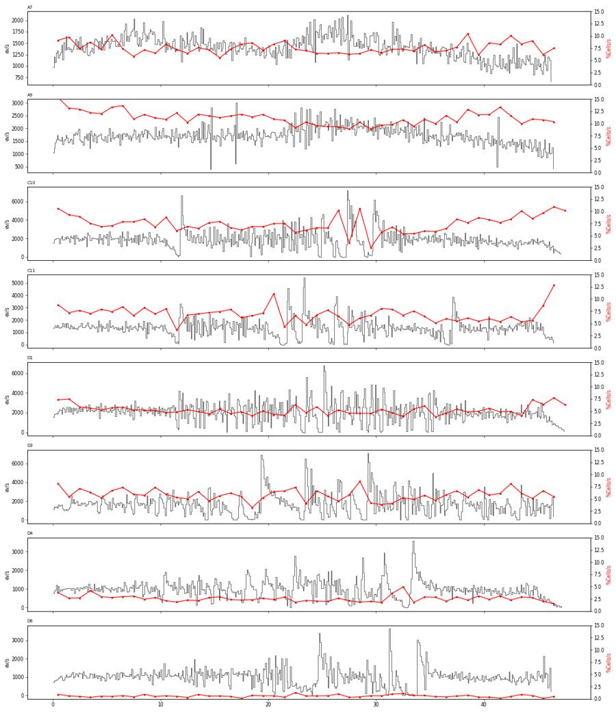
139
tool call · Bash
cd /task/work; cat > flowqc.py <<'EOF'
from common import *
out=[]
for _,r in lay.iterrows():
d=load(r.well); t=d['Time'].values; n=len(t)
bw=0.1; nb=int(np.floor(t.max()/bw)); h=np.bincount((t[t<nb*bw]/bw).astype(int),minlength=nb)
base=pd.Series(h).rolling(51,center=True,min_periods=10).median().values
z=(h-base)/np.sqrt(np.maximum(base,1)); ratio=h/np.maximum(base,1)
low=(z<-5)&(ratio<0.6); high=(z>5)&(ratio>1.4)
core=slice(5,nb-5)
lowc=low[core]; highc=high[core]; hc=h[core]
# first and last disturbed bin
disturbed=np.where((low|high))[0]
# number of interruptions: runs of low bins
runs=np.sum(np.diff(np.r_[0,lowc.astype(int)])==1)
# longest window: fraction of 1-s windows containing >=1 disturbed bin
w1=np.add.reduceat((low|high)[:nb//10*10].astype(int),np.arange(0,nb//10*10,10))>0
disp=np.var(hc-base[core])/np.mean(base[core]) # index of dispersion vs Poisson (1 = ideal)
zero=np.sum(hc<=0.1*base[core])
out.append(dict(well=r.well,n=n,rate_med=int(np.median(h)*10),disp_index=round(disp,1),low_bins=int(lowc.sum()),high_bins=int(highc.sum()),
pct_time_low=round(100*lowc.mean(),1),pct_time_high=round(100*highc.mean(),1),pct_ev_in_high=round(100*hc[highc].sum()/hc.sum(),1),
n_interrupt=int(runs),near_zero_bins=int(zero),pct_1s_windows_disturbed=round(100*w1.mean(),1),
first_dist_s=round(disturbed[0]*bw,1) if len(disturbed) else None,max_rate_x=round(ratio[core].max(),2)))
df=pd.DataFrame(out); pd.set_option('display.width',250); print(df.sort_values('disp_index').to_string()); df.to_csv('flowqc.csv',index=False)
EOF
python flowqc.py140
tool output
well n rate_med disp_index low_bins high_bins pct_time_low pct_time_high pct_ev_in_high n_interrupt near_zero_bins pct_1s_windows_disturbed first_dist_s max_rate_x 14 B6 8004 170 1.1 0 0 0.0 0.0 0.0 0 0 0.0 NaN 2.33 11 B3 13995 300 1.1 0 1 0.0 0.2 0.3 0 0 2.1 45.0 2.09 4 A7 64975 1410 1.6 0 0 0.0 0.0 0.0 0 0 0.0 NaN 1.43 6 A9 80278 1720 3.5 3 5 0.7 1.1 1.7 3 0 13.0 14.6 1.77 5 A8 60216 1280 3.9 11 6 2.4 1.3 2.2 10 0 21.3 13.3 1.70 2 A3 95933 2020 4.5 3 3 0.7 0.7 1.1 3 0 10.6 13.5 1.91 3 A5 73753 1600 6.6 13 11 2.9 2.4 4.0 11 2 26.1 14.0 1.70 13 B5 33754 720 7.2 16 16 3.5 3.5 7.3 9 5 23.9 11.0 2.55 7 A10 64936 1370 7.3 13 11 2.8 2.4 4.2 10 1 27.7 2.5 2.49 28 D5 18412 380 7.8 16 19 3.5 4.2 10.1 6 14 28.3 10.9 3.76 10 B2 51930 1090 10.0 28 19 6.1 4.1 7.9 26 2 38.3 13.6 2.60 8 A11 68296 1450 10.4 15 23 3.3 5.1 8.9 11 3 37.0 12.6 2.40 20 C8 52267 1100 11.5 36 23 8.0 5.1 9.4 34 2 50.0 8.3 2.06 12 B4 58782 1260 13.8 22 25 4.9 5.5 10.6 15 9 43.5 11.8 3.29 1 A2 81008 1680 13.9 23 26 5.1 5.8 10.4 20 4 45.7 12.1 2.07 0 A1 90651 1850 14.2 29 30 6.2 6.5 10.4 25 1 55.3 1.6 1.95 17 C3 68270 1430 15.3 42 39 9.3 8.6 14.8 39 1 63.0 9.9 2.05 18 C5 88646 1840 16.7 35 34 7.6 7.3 12.2 29 1 53.2 4.1 2.37 27 D4 46763 985 20.2 44 43 9.5 9.3 17.7 22 7 57.4 10.0 4.37 25 D2 73937 1545 20.6 44 34 9.5 7.4 14.0 31 4 48.9 13.3 2.66 29 D6 46753 1020 22.8 38 39 8.4 8.6 17.0 20 13 43.5 10.3 9.07 9 B1 58310 1230 26.1 42 35 9.3 7.7 15.8 20 11 45.7 9.2 4.74 16 C2 80166 1610 27.2 59 56 12.7 12.1 20.5 47 6 72.3 1.5 2.76 21 C9 92282 1900 32.1 41 48 8.9 10.4 18.9 28 9 76.6 6.2 3.73 19 C7 119052 2550 32.1 38 41 8.2 8.8 14.7 29 4 63.8 9.4 3.66 23 C11 63651 1360 34.4 63 58 13.9 12.8 24.0 31 19 56.5 8.6 4.07 15 C1 95817 1960 42.4 57 65 12.6 14.4 25.5 43 11 76.1 4.9 3.00 24 D1 97824 2095 44.5 71 66 15.3 14.2 25.0 46 21 72.3 7.4 3.34 22 C10 88797 1830 47.0 58 64 12.6 13.9 25.7 30 19 70.2 3.1 4.78 26 D3 77334 1600 79.5 111 103 24.4 22.7 43.3 52 36 91.3 1.7 5.24
142
tool call · Bash
cd /task/work; python - <<'EOF'
from common import *
for w in lay.well:
d=load(w)
dup=d.duplicated(subset=['FSC-A','SSC-A','BL1-A','RL3-A','FSC-H','SSC-H']).sum()
t=d['Time'].values; dt=np.diff(t)
# time resolution / ties
ties=np.mean(dt==0)
# count events at exact max in each channel
sat={c:int((d[c]>=1048575).sum()) for c in ['FSC-A','SSC-A','BL1-A','RL3-A','FSC-H','SSC-H']}
print(w, len(d), 'dups',dup, 'ties%',round(100*ties,1), 'nonmono',int((dt<0).sum()), sat, 'FSCWmax',d['FSC-W'].max(), 'tstep',np.min(dt[dt>0]).round(4))
EOF143
tool output
A1 90651 dups 0 ties% 59.8 nonmono 0 {'FSC-A': 3838, 'SSC-A': 27577, 'BL1-A': 0, 'RL3-A': 0, 'FSC-H': 0, 'SSC-H': 12246} FSCWmax 375.0 tstep 0.001
A2 81008 dups 0 ties% 57.5 nonmono 0 {'FSC-A': 2330, 'SSC-A': 21822, 'BL1-A': 0, 'RL3-A': 0, 'FSC-H': 0, 'SSC-H': 8399} FSCWmax 375.0 tstep 0.001
A3 95933 dups 0 ties% 59.8 nonmono 0 {'FSC-A': 1760, 'SSC-A': 25603, 'BL1-A': 1, 'RL3-A': 0, 'FSC-H': 0, 'SSC-H': 8145} FSCWmax 375.0 tstep 0.001
A5 73753 dups 0 ties% 54.2 nonmono 0 {'FSC-A': 1583, 'SSC-A': 21283, 'BL1-A': 0, 'RL3-A': 64, 'FSC-H': 0, 'SSC-H': 7398} FSCWmax 375.0 tstep 0.001
A7 64975 dups 0 ties% 47.9 nonmono 0 {'FSC-A': 715, 'SSC-A': 17156, 'BL1-A': 0, 'RL3-A': 2, 'FSC-H': 0, 'SSC-H': 5043} FSCWmax 375.0 tstep 0.001
A8 60216 dups 0 ties% 47.5 nonmono 0 {'FSC-A': 1049, 'SSC-A': 17729, 'BL1-A': 0, 'RL3-A': 4, 'FSC-H': 0, 'SSC-H': 5755} FSCWmax 375.0 tstep 0.001
A9 80278 dups 0 ties% 55.8 nonmono 0 {'FSC-A': 1443, 'SSC-A': 19900, 'BL1-A': 2, 'RL3-A': 3, 'FSC-H': 0, 'SSC-H': 6789} FSCWmax 375.0 tstep 0.001
A10 64936 dups 0 ties% 49.7 nonmono 0 {'FSC-A': 1248, 'SSC-A': 16336, 'BL1-A': 1, 'RL3-A': 162, 'FSC-H': 0, 'SSC-H': 5585} FSCWmax 375.0 tstep 0.001
A11 68296 dups 0 ties% 52.6 nonmono 0 {'FSC-A': 2011, 'SSC-A': 18566, 'BL1-A': 2, 'RL3-A': 47, 'FSC-H': 0, 'SSC-H': 6613} FSCWmax 375.0 tstep 0.001
B1 58310 dups 0 ties% 50.2 nonmono 0 {'FSC-A': 1282, 'SSC-A': 15966, 'BL1-A': 1, 'RL3-A': 234, 'FSC-H': 0, 'SSC-H': 5770} FSCWmax 375.0 tstep 0.001
B2 51930 dups 0 ties% 44.7 nonmono 0 {'FSC-A': 1677, 'SSC-A': 12432, 'BL1-A': 3, 'RL3-A': 86, 'FSC-H': 0, 'SSC-H': 5133} FSCWmax 375.0 tstep 0.001
B3 13995 dups 0 ties% 13.7 nonmono 0 {'FSC-A': 85, 'SSC-A': 1851, 'BL1-A': 0, 'RL3-A': 5, 'FSC-H': 0, 'SSC-H': 448} FSCWmax 375.0 tstep 0.001
B4 58782 dups 0 ties% 47.4 nonmono 0 {'FSC-A': 1354, 'SSC-A': 11797, 'BL1-A': 0, 'RL3-A': 106, 'FSC-H': 0, 'SSC-H': 4714} FSCWmax 375.0 tstep 0.001
B5 33754 dups 0 ties% 33.0 nonmono 0 {'FSC-A': 277, 'SSC-A': 8944, 'BL1-A': 0, 'RL3-A': 274, 'FSC-H': 0, 'SSC-H': 2794} FSCWmax 375.0 tstep 0.001
B6 8004 dups 0 ties% 8.2 nonmono 0 {'FSC-A': 18, 'SSC-A': 1236, 'BL1-A': 0, 'RL3-A': 6, 'FSC-H': 0, 'SSC-H': 231} FSCWmax 375.0 tstep 0.001
C1 95817 dups 0 ties% 65.3 nonmono 0 {'FSC-A': 5576, 'SSC-A': 34362, 'BL1-A': 0, 'RL3-A': 0, 'FSC-H': 0, 'SSC-H': 18396} FSCWmax 375.0 tstep 0.001
C2 80166 dups 0 ties% 60.1 nonmono 0 {'FSC-A': 3758, 'SSC-A': 27232, 'BL1-A': 0, 'RL3-A': 0, 'FSC-H': 0, 'SSC-H': 13655} FSCWmax 375.0 tstep 0.001
C3 68270 dups 0 ties% 55.1 nonmono 0 {'FSC-A': 2937, 'SSC-A': 25225, 'BL1-A': 1, 'RL3-A': 1, 'FSC-H': 0, 'SSC-H': 12085} FSCWmax 375.0 tstep 0.001
C5 88646 dups 0 ties% 61.5 nonmono 0 {'FSC-A': 4772, 'SSC-A': 35289, 'BL1-A': 0, 'RL3-A': 44, 'FSC-H': 0, 'SSC-H': 15252} FSCWmax 375.0 tstep 0.001
C7 119052 dups 0 ties% 68.4 nonmono 0 {'FSC-A': 3402, 'SSC-A': 37950, 'BL1-A': 0, 'RL3-A': 3, 'FSC-H': 0, 'SSC-H': 14436} FSCWmax 375.0 tstep 0.001
C8 52267 dups 0 ties% 47.1 nonmono 0 {'FSC-A': 1932, 'SSC-A': 18567, 'BL1-A': 0, 'RL3-A': 33, 'FSC-H': 0, 'SSC-H': 8721} FSCWmax 375.0 tstep 0.001
C9 92282 dups 0 ties% 64.0 nonmono 0 {'FSC-A': 4193, 'SSC-A': 33533, 'BL1-A': 4, 'RL3-A': 31, 'FSC-H': 0, 'SSC-H': 15971} FSCWmax 375.0 tstep 0.001
C10 88797 dups 0 ties% 62.5 nonmono 0 {'FSC-A': 3905, 'SSC-A': 26969, 'BL1-A': 4, 'RL3-A': 128, 'FSC-H': 0, 'SSC-H': 13110} FSCWmax 375.0 tstep 0.001
C11 63651 dups 0 ties% 53.9 nonmono 0 {'FSC-A': 2553, 'SSC-A': 18895, 'BL1-A': 2, 'RL3-A': 229, 'FSC-H': 0, 'SSC-H': 9044} FSCWmax 375.0 tstep 0.001
D1 97824 dups 0 ties% 64.7 nonmono 0 {'FSC-A': 3979, 'SSC-A': 24121, 'BL1-A': 6, 'RL3-A': 330, 'FSC-H': 0, 'SSC-H': 11785} FSCWmax 375.0 tstep 0.001
D2 73937 dups 0 ties% 56.9 nonmono 0 {'FSC-A': 2501, 'SSC-A': 19679, 'BL1-A': 7, 'RL3-A': 191, 'FSC-H': 0, 'SSC-H': 8916} FSCWmax 375.0 tstep 0.001
D3 77334 dups 0 ties% 61.4 nonmono 0 {'FSC-A': 2630, 'SSC-A': 22017, 'BL1-A': 8, 'RL3-A': 382, 'FSC-H': 0, 'SSC-H': 9735} FSCWmax 375.0 tstep 0.001
D4 46763 dups 0 ties% 43.2 nonmono 0 {'FSC-A': 744, 'SSC-A': 12455, 'BL1-A': 0, 'RL3-A': 424, 'FSC-H': 0, 'SSC-H': 4274} FSCWmax 375.0 tstep 0.001
D5 18412 dups 0 ties% 21.7 nonmono 0 {'FSC-A': 252, 'SSC-A': 4673, 'BL1-A': 1, 'RL3-A': 194, 'FSC-H': 0, 'SSC-H': 1835} FSCWmax 375.0 tstep 0.001
D6 46753 dups 0 ties% 44.7 nonmono 0 {'FSC-A': 606, 'SSC-A': 10515, 'BL1-A': 0, 'RL3-A': 339, 'FSC-H': 0, 'SSC-H': 4040} FSCWmax 375.0 tstep 0.001145
thinking
No tampering found, and the SSC-A saturation is plate-wide, but D3 is the clear flow-instability outlier at a dispersion index of 79.5 against a median near 15. I'm now checking whether that instability biases the gated percentages.
146
tool call · Bash
cd /task/work; cat > segqc2.py <<'EOF'
from common import *
from scipy.stats import chi2_contingency
fq=pd.read_csv('flowqc.csv').set_index('well')
out=[]
for _,r in lay.iterrows():
d=load(r.well); t=d['Time'].values
bw=0.1; nb=int(np.floor(t.max()/bw)); idx=np.minimum((t/bw).astype(int),nb-1); h=np.bincount(idx,minlength=nb)
base=pd.Series(h).rolling(51,center=True,min_periods=10).median().values
z=(h-base)/np.sqrt(np.maximum(base,1)); ratio=h/np.maximum(base,1)
bad=((z<-5)&(ratio<0.6))|((z>5)&(ratio>1.4))
# 1-s windows
win=(t//1.0).astype(int); nw=win.max()+1
wb=np.zeros(nw,bool)
for k in np.where(bad)[0]: wb[int(k*bw)]=True
evbad=wb[win]
sm=sing_mask(d); R=d['RL3-A'].values; B=d['BL1-A'].values; S=d['SSC-A'].values
lv=sm&(R>=-3000)&(R<=5000)&(S>=30000)&(S<=280000); cp=lv&(B>=1000)&(B<=1e6)
def pr(num,den,m): return num[m].sum(), den[m].sum()
res=dict(well=r.well,pct_ev_disturbed_windows=round(100*evbad.mean(),1))
for name,num,den in [('cells',cells_mask(d),np.ones(len(d),bool)),('live',lv,sm),('casp',cp,lv)]:
a1,a0=pr(num,den,~evbad); b1,b0=pr(num,den,evbad)
p=np.nan
if a0>0 and b0>0 and min(a1,b1)+0>=0:
tab=np.array([[a1,a0-a1],[b1,b0-b1]])
if (tab.sum(0)>0).all(): p=chi2_contingency(tab)[1]
res[name+'_st']=round(100*a1/max(a0,1),2); res[name+'_dis']=round(100*b1/max(b0,1),2); res[name+'_p']=float('%.2g'%p) if p==p else None
out.append(res)
df=pd.DataFrame(out); pd.set_option('display.width',250); print(df.to_string())
EOF
python segqc2.py147
tool output
well pct_ev_disturbed_windows cells_st cells_dis cells_p live_st live_dis live_p casp_st casp_dis casp_p 0 A1 57.0 8.90 8.09 1.400000e-05 100.00 100.00 NaN 0.37 0.44 0.780 1 A2 49.3 7.57 6.32 3.700000e-12 100.00 100.00 NaN 0.17 0.17 1.000 2 A3 12.9 9.80 8.99 4.900000e-03 99.94 99.81 0.430 6.12 6.91 0.360 3 A5 26.6 7.22 6.73 2.200000e-02 96.24 96.34 0.950 7.14 6.68 0.630 4 A7 0.5 7.49 7.48 1.000000e+00 99.85 100.00 1.000 9.85 9.52 1.000 5 A8 22.8 10.26 8.85 1.400000e-06 99.41 99.48 0.960 16.82 16.87 1.000 6 A9 13.3 11.07 11.20 7.000000e-01 99.41 98.87 0.059 16.75 18.12 0.270 7 A10 29.2 8.98 7.96 2.900000e-05 96.23 95.96 0.710 9.62 9.88 0.820 8 A11 41.0 9.37 8.13 2.200000e-08 98.34 98.20 0.760 8.59 10.45 0.022 9 B1 48.3 6.46 5.80 1.100000e-03 92.92 93.65 0.440 6.24 8.18 0.041 10 B2 39.7 6.00 5.47 1.200000e-02 95.29 95.07 0.860 6.22 6.59 0.770 11 B3 2.0 3.46 3.57 1.000000e+00 79.45 100.00 0.230 7.47 10.00 1.000 12 B4 45.0 5.55 5.48 7.300000e-01 96.35 95.96 0.650 6.38 7.12 0.470 13 B5 25.8 0.75 0.79 7.200000e-01 6.45 4.76 0.980 37.50 0.00 0.860 14 B6 0.0 1.00 0.00 NaN 40.30 0.00 NaN 14.81 0.00 NaN 15 C1 77.8 12.42 9.74 7.200000e-30 100.00 100.00 NaN 0.00 0.03 0.940 16 C2 74.5 11.02 10.11 2.500000e-04 100.00 100.00 NaN 0.00 0.05 0.680 17 C3 65.4 10.64 8.63 7.900000e-18 99.92 99.89 1.000 6.29 7.16 0.210 18 C5 55.6 11.58 9.52 1.900000e-23 99.22 99.29 0.810 8.57 7.72 0.160 19 C7 62.4 7.39 6.52 8.700000e-09 99.87 99.86 1.000 11.39 10.97 0.590 20 C8 54.2 10.28 7.90 2.700000e-21 99.40 99.66 0.310 27.25 27.90 0.650 21 C9 77.0 12.10 10.34 4.500000e-13 99.22 99.47 0.220 20.90 19.71 0.220 22 C10 71.1 7.83 6.93 3.000000e-06 97.24 97.64 0.410 13.44 12.72 0.470 23 C11 57.9 7.21 6.35 2.000000e-05 95.91 95.76 0.880 18.26 18.44 0.920 24 D1 71.4 5.67 4.97 9.700000e-06 91.50 89.93 0.100 9.60 9.07 0.630 25 D2 50.8 7.12 6.04 3.200000e-09 89.93 91.52 0.076 7.81 9.11 0.150 26 D3 91.2 6.97 5.61 3.900000e-06 90.83 88.76 0.220 8.87 7.89 0.560 27 D4 58.8 2.73 2.34 8.000000e-03 34.35 34.05 0.980 17.12 16.67 1.000 28 D5 32.1 1.18 1.05 4.600000e-01 4.55 4.44 1.000 60.00 50.00 1.000 29 D6 42.7 0.47 0.64 1.800000e-02 16.33 23.66 0.280 37.50 31.82 0.990
149
thinking
Flow disturbances lower the cell count in those windows but don't change Live% or Caspase%, so I'm flagging only D3 for flow. Next I'm checking the run endings for signs of a well running dry.
150
tool call · Bash
cd /task/work; python - <<'EOF'
from common import *
for w in lay.well:
d=load(w); t=d['Time'].values; te=t.max()
ref=np.sum((t>=30)&(t<40))/10
segs=[np.sum((t>=te-k-0.5)&(t<te-k))/0.5 for k in (3,2.5,2,1.5,1,0.5,0)]
print(w, round(te,2), int(ref), [round(s/ref,2) for s in segs])
EOF151
tool output
A1 47.48 1910 [0.66, 0.75, 0.73, 0.86, 0.92, 0.82, 0.71] A2 46.25 1801 [0.79, 0.71, 0.75, 0.73, 0.76, 0.73, 0.62] A3 47.1 2155 [0.71, 0.69, 0.77, 0.7, 0.65, 0.66, 0.69] A5 46.3 1629 [0.77, 0.72, 0.76, 0.72, 0.71, 0.71, 0.79] A7 46.24 1343 [0.85, 0.79, 0.83, 0.78, 0.78, 0.74, 0.84] A8 47.27 1286 [0.73, 0.87, 0.67, 0.71, 0.58, 0.56, 0.32] A9 46.42 1768 [0.77, 0.76, 0.78, 0.69, 0.65, 0.64, 0.68] A10 47.21 1334 [0.67, 0.8, 0.8, 0.9, 0.72, 0.65, 0.58] A11 46.35 1495 [0.79, 0.76, 0.69, 0.68, 0.71, 0.71, 0.7] B1 46.33 1280 [0.74, 0.74, 0.71, 0.78, 0.75, 0.82, 0.92] B2 47.16 1096 [0.82, 0.81, 0.78, 0.81, 0.81, 0.71, 0.96] B3 47.22 277 [0.85, 0.95, 1.07, 1.03, 0.99, 0.81, 0.63] B4 46.18 1233 [0.88, 0.83, 0.81, 0.76, 0.85, 0.9, 1.01] B5 46.31 730 [0.93, 0.76, 0.68, 0.69, 0.68, 0.74, 0.85] B6 47.38 168 [0.92, 0.9, 0.95, 0.98, 0.64, 0.48, 0.35] C1 46.27 2341 [0.76, 0.84, 0.75, 0.64, 0.72, 0.56, 0.84] C2 47.37 1771 [0.86, 0.9, 0.99, 0.91, 0.64, 0.43, 0.22] C3 46.21 1462 [0.64, 0.85, 0.71, 0.72, 0.73, 0.81, 0.89] C5 47.36 1892 [0.82, 0.9, 0.85, 0.68, 0.54, 0.27, 0.14] C7 47.42 2494 [0.78, 0.83, 0.92, 0.79, 0.61, 0.38, 0.23] C8 46.21 1141 [0.63, 0.65, 0.65, 0.57, 0.64, 0.66, 0.75] C9 47.37 1989 [0.82, 0.88, 0.67, 0.56, 0.36, 0.24, 0.14] C10 47.17 2015 [0.77, 0.84, 0.83, 0.77, 0.63, 0.43, 0.25] C11 46.43 1277 [1.25, 1.23, 1.32, 1.02, 1.05, 0.62, 0.39] D1 47.42 1978 [1.05, 0.98, 1.08, 0.76, 0.6, 0.37, 0.19] D2 47.28 1526 [0.93, 0.94, 0.89, 0.59, 0.4, 0.22, 0.11] D3 46.43 1752 [0.36, 1.15, 0.76, 0.78, 0.71, 0.83, 0.78] D4 47.2 1054 [0.91, 0.81, 0.77, 0.52, 0.37, 0.19, 0.08] D5 46.37 409 [0.76, 0.79, 0.66, 0.78, 0.82, 0.84, 0.99] D6 46.24 938 [0.86, 0.91, 0.94, 1.07, 1.12, 1.29, 0.99]
153
thinking
Both wells that stop near 47.3 s ramp down gradually and those near 46.3 s stop abruptly, which points to plate-wide instrument behaviour rather than anything specific to each well. I'm now writing flags.csv with the well-specific evidence.
154
tool call · Bash
cd /task/work; cat > flags.py <<'EOF'
from common import *
cnt=pd.read_csv('/task/outputs/counts.csv')
C=cnt.pivot(index='well',columns='population',values='count')
fq=pd.read_csv('flowqc.csv').set_index('well')
st={}
for w in lay.well:
d=load(w); sm=sing_mask(d); R=d['RL3-A'].values; B=d['BL1-A'].values
st[w]=dict(n=len(d),rl3_all5k=100*np.mean(R>5000),rl3_s99=np.percentile(R[sm],99),zb_sing=100*np.mean(R[sm]>5000),bl1_s99=np.percentile(B[sm],99),
cells_pct=100*C.loc[w,'Cells']/len(d))
def base(w):
s=st[w]; return (f"events={s['n']}; Cells={C.loc[w,'Cells']} ({s['cells_pct']:.1f}% of events); Single_Cells={C.loc[w,'Single_Cells']}; Live={C.loc[w,'Live']}; Caspase_pos={C.loc[w,'Caspase_pos']}")
def flow(w):
f=fq.loc[w]; return (f"0.1-s event-rate dispersion index={f.disp_index} (Poisson=1; A7=1.6; plate median~15); {f.pct_time_low}% of run time <0.6x local rate and {f.pct_time_high}% >1.4x; {f.near_zero_bins} bins near zero")
ref=lambda w: f"{w}: RL3-A>5000 in {st[w]['rl3_all5k']:.2f}% of all events; singlet RL3-A p99={st[w]['rl3_s99']:.0f}"
F={}
F['A2']=('bad_control','high',f"Labelled Zombie NIR-only but shows no Zombie NIR signal: {ref('A2')} vs unstained {ref('A1')} and NT dual-stain {ref('A7')}; Live gate retains 100.00% of singlets exactly as unstained; BL1-A also unstained-like (singlet p99={st['A2']['bl1_s99']:.0f}). Behaves as a second unstained well so cannot serve as the Zombie single-stain reference")
F['C2']=('bad_control','high',f"Labelled Zombie NIR-only but shows no Zombie NIR signal: {ref('C2')} vs unstained {ref('C1')} and NT dual-stain {ref('C7')}; Live gate retains 100.00% of singlets exactly as unstained; BL1-A singlet p99={st['C2']['bl1_s99']:.0f} (unstained-like)")
F['A3']=('bad_control','high',f"Labelled CellEvent-only but contains Zombie NIR: {ref('A3')} vs unstained {ref('A1')} and dual-stained NT {ref('A7')}; a discrete Zombie-bright (RL3-A 1e4-1e5) population is present so it is not a Zombie-negative single-stain reference")
F['C3']=('bad_control','high',f"Labelled CellEvent-only but contains Zombie NIR: {ref('C3')} vs unstained {ref('C1')} and dual-stained NT {ref('C7')}; discrete Zombie-bright (RL3-A 1e4-1e5) population present so it is not a Zombie-negative single-stain reference")
for w in ['B5','B6','D5','D6']:
s=st[w]
F[w]=('mislabeled_or_unexpected','high',f"No notebook plate-map entry (treatment/stain/replicate unrecorded) so the condition cannot be assigned; content is also atypical: {base(w)}; {s['zb_sing']:.1f}% of singlets Zombie-bright (RL3-A>5000) vs 0.15% in A7 and 11% in D3; RL3-A>5000 in {s['rl3_all5k']:.1f}% of all events. Live count too small for a caspase percentage")
F['B3']=('too_few_events','medium',f"{base('B3')}; total events 13995 vs plate median ~69000 and 58782 in replicate B4; rate steady ~300 events/s for the whole 47 s run (dispersion index {fq.loc['B3','disp_index']}) so low input not a clog; only 27 Caspase_pos events -> caspase % of Live (7.5%) has 95% CI about +/-2.7 pp; Live and Caspase_pos counts are below 500 and 100")
F['D4']=('too_few_events','medium',f"{base('D4')}; only 2.5% of events in Cells; Live is 34.2% of singlets vs 89.0% in replicate D3 (same genotype and dose), so 54 Caspase_pos events; profile resembles the unrecorded dead-cell wells so a well mix-up cannot be excluded; flow also unstable ({flow('D4')})")
F['D3']=('clog_or_interrupted_flow','medium',f"Worst flow on the plate: {flow('D3')}; 43% of events arrive in surge bins up to {fq.loc['D3','max_rate_x']}x the local rate; 15 gaps >50 ms totalling 2.2 s; disturbed 0.1-s bins in 91% of 1-s windows from 1.7 s onward (erratic throughout 13-46 s) leaving no stable segment; %Cells drops from 6.97% in stable to 5.61% in disturbed windows (p=4e-6); Live% and Caspase% not significantly shifted (88.8 vs 90.8; 7.9 vs 8.9) hence medium")
rows=[]
for _,r in lay.iterrows():
w=r.well
if w in F:
cat,conf,ev=F[w]; rows.append(dict(file=r.file,well=w,usable='no',reason_category=cat,evidence=ev+f"; confidence={conf}"))
else:
rows.append(dict(file=r.file,well=w,usable='yes',reason_category='ok',evidence=f"{base(w)}; event-rate dispersion index={fq.loc[w,'disp_index']}; no scatter saturation inside Cells"))
pd.DataFrame(rows).to_csv('/task/outputs/flags.csv',index=False)
print(pd.DataFrame(rows)[['well','usable','reason_category']].to_string())
EOF
python flags.py; head -c 1500 /task/outputs/flags.csv155
tool output
well usable reason_category 0 A1 yes ok 1 A2 no bad_control 2 A3 no bad_control 3 A5 yes ok 4 A7 yes ok 5 A8 yes ok 6 A9 yes ok 7 A10 yes ok 8 A11 yes ok 9 B1 yes ok 10 B2 yes ok 11 B3 no too_few_events 12 B4 yes ok 13 B5 no mislabeled_or_unexpected 14 B6 no mislabeled_or_unexpected 15 C1 yes ok 16 C2 no bad_control 17 C3 no bad_control 18 C5 yes ok 19 C7 yes ok 20 C8 yes ok 21 C9 yes ok 22 C10 yes ok 23 C11 yes ok 24 D1 yes ok 25 D2 yes ok 26 D3 no clog_or_interrupted_flow 27 D4 no too_few_events 28 D5 no mislabeled_or_unexpected 29 D6 no mislabeled_or_unexpected file,well,usable,reason_category,evidence Caspase_primaryneurons_caspase_Group_A1.fcs,A1,yes,ok,events=90651; Cells=7651 (8.4% of events); Single_Cells=7154; Live=7154; Caspase_pos=29; event-rate dispersion index=14.2; no scatter saturation inside Cells Caspase_primaryneurons_caspase_Group_A2.fcs,A2,no,bad_control,Labelled Zombie NIR-only but shows no Zombie NIR signal: A2: RL3-A>5000 in 0.43% of all events; singlet RL3-A p99=130 vs unstained A1: RL3-A>5000 in 0.53% of all events; singlet RL3-A p99=130 and NT dual-stain A7: RL3-A>5000 in 14.47% of all events; singlet RL3-A p99=1904; Live gate retains 100.00% of singlets exactly as unstained; BL1-A also unstained-like (singlet p99=303). Behaves as a second unstained well so cannot serve as the Zombie single-stain reference; confidence=high Caspase_primaryneurons_caspase_Group_A3.fcs,A3,no,bad_control,Labelled CellEvent-only but contains Zombie NIR: A3: RL3-A>5000 in 11.84% of all events; singlet RL3-A p99=1865 vs unstained A1: RL3-A>5000 in 0.53% of all events; singlet RL3-A p99=130 and dual-stained NT A7: RL3-A>5000 in 14.47% of all events; singlet RL3-A p99=1904; a discrete Zombie-bright (RL3-A 1e4-1e5) population is present so it is not a Zombie-negative single-stain reference; confidence=high Caspase_primaryneurons_caspase_Group_A5.fcs,A5,yes,ok,events=73753; Cells=5232 (7.1% of events); Single_Cells=4923; Live=4739; Caspase_pos=333; event-rate dispersion index=6.6; no scatter saturation inside Cells Caspase_primaryneurons
157
tool call · Bash
cd /task/work; python -c "
import pandas as pd; s=pd.read_csv('stats.csv'); print(s.n.median())"; sed -i 's/Live% and Caspase% not significantly shifted (88.8 vs 90.8; 7.9 vs 8.9) hence medium/Live% and Caspase% not significantly shifted (stable vs disturbed: Live 90.8 vs 88.8%; Caspase_pos 8.9 vs 7.9% of Live) hence medium/' flags.py; python flags.py >/dev/null; grep -c . /task/outputs/flags.csv; grep D3 /task/outputs/flags.csv158
tool output
68283.0 31 Caspase_primaryneurons_caspase_Group_B5.fcs,B5,no,mislabeled_or_unexpected,No notebook plate-map entry (treatment/stain/replicate unrecorded) so the condition cannot be assigned; content is also atypical: events=33754; Cells=256 (0.8% of events); Single_Cells=166; Live=10; Caspase_pos=3; 94.0% of singlets Zombie-bright (RL3-A>5000) vs 0.15% in A7 and 11% in D3; RL3-A>5000 in 95.0% of all events. Live count too small for a caspase percentage; confidence=high Caspase_primaryneurons_caspase_Group_B6.fcs,B6,no,mislabeled_or_unexpected,No notebook plate-map entry (treatment/stain/replicate unrecorded) so the condition cannot be assigned; content is also atypical: events=8004; Cells=80 (1.0% of events); Single_Cells=67; Live=27; Caspase_pos=4; 59.7% of singlets Zombie-bright (RL3-A>5000) vs 0.15% in A7 and 11% in D3; RL3-A>5000 in 87.1% of all events. Live count too small for a caspase percentage; confidence=high Caspase_primaryneurons_caspase_Group_D3.fcs,D3,no,clog_or_interrupted_flow,Worst flow on the plate: 0.1-s event-rate dispersion index=79.5 (Poisson=1; A7=1.6; plate median~15); 24.4% of run time <0.6x local rate and 22.7% >1.4x; 36.0 bins near zero; 43% of events arrive in surge bins up to 5.24x the local rate; 15 gaps >50 ms totalling 2.2 s; disturbed 0.1-s bins in 91% of 1-s windows from 1.7 s onward (erratic throughout 13-46 s) leaving no stable segment; %Cells drops from 6.97% in stable to 5.61% in disturbed windows (p=4e-6); Live% and Caspase% not significantly shifted (stable vs disturbed: Live 90.8 vs 88.8%; Caspase_pos 8.9 vs 7.9% of Live) hence medium; confidence=medium Caspase_primaryneurons_caspase_Group_D4.fcs,D4,no,too_few_events,"events=46763; Cells=1169 (2.5% of events); Single_Cells=936; Live=320; Caspase_pos=54; only 2.5% of events in Cells; Live is 34.2% of singlets vs 89.0% in replicate D3 (same genotype and dose), so 54 Caspase_pos events; profile resembles the unrecorded dead-cell wells so a well mix-up cannot be excluded; flow also unstable (0.1-s event-rate dispersion index=20.2 (Poisson=1; A7=1.6; plate median~15); 9.5% of run time <0.6x local rate and 9.3% >1.4x; 7.0 bins near zero); confidence=medium" Caspase_primaryneurons_caspase_Group_D5.fcs,D5,no,mislabeled_or_unexpected,No notebook plate-map entry (treatment/stain/replicate unrecorded) so the condition cannot be assigned; content is also atypical: events=18412; Cells=210 (1.1% of events); Single_Cells=155; Live=7; Caspase_pos=4; 95.5% of singlets Zombie-bright (RL3-A>5000) vs 0.15% in A7 and 11% in D3; RL3-A>5000 in 92.7% of all events. Live count too small for a caspase percentage; confidence=high Caspase_primaryneurons_caspase_Group_D6.fcs,D6,no,mislabeled_or_unexpected,No notebook plate-map entry (treatment/stain/replicate unrecorded) so the condition cannot be assigned; content is also atypical: events=46753; Cells=255 (0.5% of events); Single_Cells=191; Live=38; Caspase_pos=13; 79.6% of singlets Zombie-bright (RL3-A>5000) vs 0.15% in A7 and 11% in D3; RL3-A>5000 in 89.1% of all events. Live count too small for a caspase percentage; confidence=high
160
tool call · Bash
cd /task/work; sed -i "s/{f.near_zero_bins} bins near zero/{int(f.near_zero_bins)} of 0.1-s bins near zero/; s/plate median~15/plate median~14/; s/plate median ~69000/plate median ~68000/" flags.py; python flags.py >/dev/null; grep -o "dispersion index=79.5[^;]*;[^;]*;[^;]*;" /task/outputs/flags.csv
cat > final_fig.py <<'EOF'
import flowkit as fk, numpy as np, pandas as pd, matplotlib; matplotlib.use('Agg'); import matplotlib.pyplot as plt
from matplotlib.colors import LogNorm
gs=fk.parse_gating_xml('/task/outputs/gates.xml')
ws=['A1','A7','A9','D3','B4','D4']
fig,axs=plt.subplots(len(ws),4,figsize=(20,4.2*len(ws)))
T=lambda v: np.arcsinh(v/200)/np.log(10)
for i,w in enumerate(ws):
s=fk.Sample(f'/task/inputs/raw/Caspase_primaryneurons_caspase_Group_{w}.fcs'); res=gs.gate_sample(s)
d=s.as_dataframe(source='raw'); d.columns=d.columns.get_level_values(0)
m1=res.get_gate_membership('Cells'); m2=res.get_gate_membership('Single_Cells'); m3=res.get_gate_membership('Live'); m4=res.get_gate_membership('Caspase_pos')
ax=axs[i,0]; ax.hist2d(d['FSC-A'],d['SSC-A'],bins=200,range=[[0,6e5],[0,6e5]],norm=LogNorm(),cmap='Greys'); ax.scatter(d['FSC-A'][m1],d['SSC-A'][m1],s=0.2,c='r',alpha=.3); ax.set_title(f'{w} Cells {m1.sum()}')
ax=axs[i,1]; ax.scatter(d['SSC-A'][m1],d['SSC-H'][m1],s=0.3,c='grey'); ax.scatter(d['SSC-A'][m2],d['SSC-H'][m2],s=0.3,c='b'); ax.set_title(f'Single_Cells {m2.sum()}')
ax=axs[i,2]; ax.scatter(T(d['RL3-A'][m2]),d['SSC-A'][m2],s=0.5,c='grey'); ax.scatter(T(d['RL3-A'][m3]),d['SSC-A'][m3],s=0.5,c='g'); ax.set_title(f'Live {m3.sum()} (asinh/200 RL3-A)'); ax.axvline(T(5000),c='k',lw=.5)
ax=axs[i,3]; ax.scatter(T(d['BL1-A'][m3]),d['SSC-A'][m3],s=0.5,c='grey'); ax.scatter(T(d['BL1-A'][m4]),d['SSC-A'][m4],s=0.5,c='m'); ax.set_title(f'Caspase_pos {m4.sum()} (asinh/200 BL1-A)'); ax.axvline(T(1000),c='k',lw=.5)
plt.tight_layout(); plt.savefig('final_gates.png',dpi=40)
EOF
python final_fig.py161
tool output
dispersion index=79.5 (Poisson=1; A7=1.6; plate median~14);
162
tool call · Read
{
"file_path": "/task/work/final_gates.png"
}163
tool output
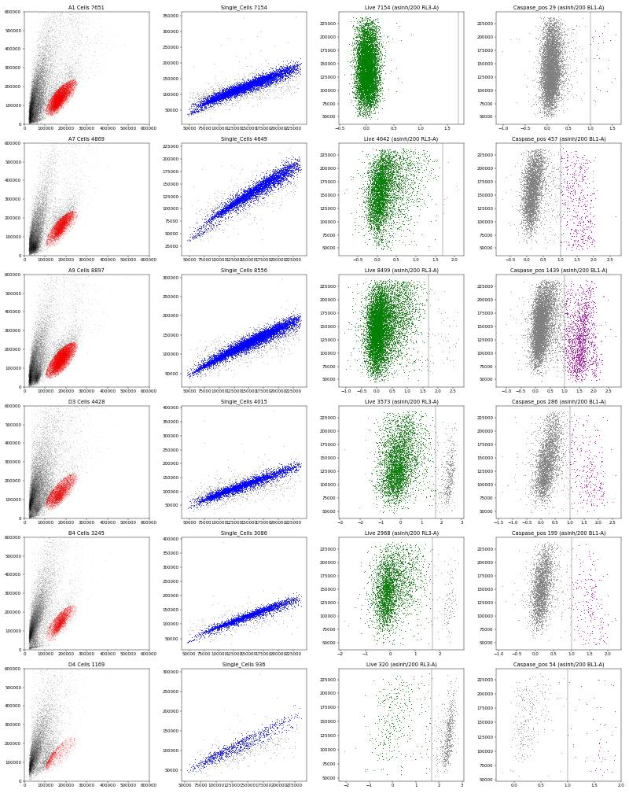
165
agent
The exported gates reproduce the intended populations. Now writing `notes.md`.
166
tool call · Write
{
"file_path": "/task/outputs/notes.md",
"content": "# CellEvent caspase-3/7 + Zombie NIR, mouse primary neurons (Attune NxT, 20-Mar-2023)\n\n## Gates\nThere is one FlowKit strategy (`gates.xml`) applied unchanged to all 30 files. It uses raw, uncompensated, untransformed (linear) values on the full data. The asinh axes used for viewing are display only.\n- **Cells** (EllipsoidGate, FSC-A \u00d7 SSC-A). Centre (178 000, 142 000), semi-axes 115 000 \u00d7 42 000, tilted 54\u00b0, distance\u00b2 = 1. It encloses the compact, tilted neuron cloud seen in every intact-cell well and was checked on pooled A, C and treated wells with density contours. It excludes the large low-FSC debris cloud (FSC < ~100k, about 90% of events) and the SSC-saturated streak (SSC-A at 1 048 575 in 13\u201340% of events plate-wide). The ellipse spans FSC-A ~102k\u2013254k and SSC-A ~46k\u2013238k, so no gated cell is at scale maximum.\n- **Single_Cells** (4-vertex PolygonGate, SSC-A \u00d7 SSC-H). Vertices (35k, 24k), (270k, 186k), (270k, 262k), (35k, 55k). It follows the singlet diagonal (SSC-H/SSC-A mode 0.87) and cuts at ratio ~0.68\u20130.69, below which the doublet tail lies. It keeps 90\u201396% of Cells in intact-cell wells.\n- **Live** (RectangleGate). RL3-A \u22123 000 to 5 000; SSC-A 30 000\u2013280 000.\n - A1/C1 (unstained) set the autofluorescence floor: singlet p99 \u2248 130.\n - Zombie-stained live cells spread dimly up to ~3 000, as seen in NT dual-stain A7/C7 and in A3/C3. The upper edge was placed in the valley between that dim tail and the Zombie-bright peak (2\u20135 \u00d7 10\u2074) seen in the 10\u201320 \u00b5M camptothecin wells. Live counts change by < 1% between 4 000 and 6 000.\n - The lower edge removes only \u2264 12 extreme-negative baseline-artefact events per well.\n- **Caspase_pos** (RectangleGate). BL1-A 1 000 to 1 000 000; SSC-A 30 000\u2013280 000.\n - The lower edge sits above the caspase-negative population of A1/C1 (Live p99 = 338/226). A2/C2 behave as unstained (p99 = 303/202) and agree.\n - It passes 0.02\u20130.41% of unstained Live events and lies in the valley before the CellEvent-bright peak (3\u201310 \u00d7 10\u00b3).\n - The upper edge only excludes saturated events (there are none in Live).\n\n## Quality control\nFor each well I checked:\n- metadata (all files share the same voltages, threshold, 200 \u00b5L/min and 155\u2013159 \u00b5L acquired);\n- event counts and the event rate in 0.1 s bins against a 5 s rolling median, with a Poisson dispersion index;\n- gaps longer than 50 ms, and the run end (to detect running dry);\n- per-channel % of events at scale maximum, and duplicate events;\n- control staining against its label, and agreement between replicates.\n\nFlagged wells (11):\n- **A2, C2 \u2013 bad_control.** The \"Zombie-only\" wells have no Zombie signal and look identical to unstained.\n- **A3, C3 \u2013 bad_control.** The \"caspase-only\" wells contain a Zombie-bright population.\n- **B5, B6, D5, D6 \u2013 mislabeled_or_unexpected.** These are the unrecorded wells: 60\u201395% of singlets are Zombie-bright and Live is only 7\u201338 events.\n- **B3, D4 \u2013 too_few_events.** Live is 358 and 320, against \u2265 2 722 in every other recorded well; B3 has 13 995 events in total, and D4 disagrees with its replicate D3.\n- **D3 \u2013 clog_or_interrupted_flow.** Its dispersion index is 79.5 (next highest 47), with 15 gaps.\n\nNotes on wells that were not flagged:\n- Brief clogs or surges are common in the later C/D wells. They mainly add debris and do not shift Live% or Caspase%, so those wells are usable. No time gating was applied, because the rules forbid per-well changes.\n- No well ran dry: every run lasts 46\u201347 s, and the ~1 s ramp-down at the end appears plate-wide.\n- SSC saturation is plate-wide (SSC voltage 350) and lies outside Cells, so no individual well was flagged for saturation.\n\n## Deviations from the strategy\n1. The control wells do not match their labels, so they were used differently from the guidance:\n - A3/C3 contain Zombie NIR and could not serve as the \"Zombie-negative reference\". They were used only as examples of live cells carrying both dyes.\n - The Live edge was set from A1/C1 together with A7/C7 and the treated wells.\n - A2/C2 contain no Zombie NIR and were used only as extra unstained references for BL1-A.\n2. The SSC-A limits on both rectangles (30k\u2013280k) are deliberately non-restrictive. Scatter extremes are already removed by the Cells ellipse, whose SSC-A span is ~46k\u2013238k.\n3. Live has a lower RL3-A limit of \u22123 000 to drop extreme-negative baseline artefacts, and Caspase_pos has an upper BL1-A limit of 1 000 000 to drop saturated events. Both are minor additions to the \"rectangle around the negative/bright events\" in the strategy.\n"
}167
tool output
File created successfully at: /task/outputs/notes.md (file state is current in your context — no need to Read it back)
169
tool call · Bash
cd /task/work; python - <<'EOF'
from common import *
mx=[]
for w in lay.well:
d=load(w); sm=sing_mask(d); R=d['RL3-A'].values[sm]; S=d['SSC-A'].values[sm]
a=np.sum((R>=-3000)&(R<=4000)); b=np.sum((R>=-3000)&(R<=6000)); c=np.sum((R>=-3000)&(R<=5000))
mx.append((w,round(100*(b-a)/max(c,1),2)))
print(sorted(mx,key=lambda x:-x[1])[:6])
EOF
python - <<'EOF'
import pandas as pd, flowkit as fk
c=pd.read_csv('/task/outputs/counts.csv'); f=pd.read_csv('/task/outputs/flags.csv')
print(c.shape, f.shape, c.population.unique(), c['count'].dtype, f.usable.value_counts().to_dict())
print(all(('confidence=' in e) for e in f[f.usable=='no'].evidence))
gs=fk.parse_gating_xml('/task/outputs/gates.xml'); print([g for g in gs.get_gate_ids()])
EOF
wc -w /task/outputs/notes.md170
tool output
[('D5', 71.43), ('D6', 10.53), ('B5', 10.0), ('B6', 7.41), ('D4', 3.12), ('B3', 1.12)]
(120, 6) (30, 5) ['Cells' 'Single_Cells' 'Live' 'Caspase_pos'] int64 {'yes': 19, 'no': 11}
True
[('Cells', ('root',)), ('Single_Cells', ('root', 'Cells')), ('Live', ('root', 'Cells', 'Single_Cells')), ('Caspase_pos', ('root', 'Cells', 'Single_Cells', 'Live'))]
761 /task/outputs/notes.md171
tool call · Bash
cd /task/outputs; sed -i 's/Live counts change by < 1% between 4 000 and 6 000\./Moving the edge between 4 000 and 6 000 changes Live by ≤ 1% in every well except the low-count dead-cell wells (B3, D4, unrecorded)./; s/It keeps 90–96% of Cells in intact-cell wells\./It keeps 89–96% of Cells in intact-cell wells./' notes.md; grep -n "4 000 and 6 000\|89–96" notes.md; ls -la
172
tool output
6:- **Single_Cells** (4-vertex PolygonGate, SSC-A × SSC-H). Vertices (35k, 24k), (270k, 186k), (270k, 262k), (35k, 55k). It follows the singlet diagonal (SSC-H/SSC-A mode 0.87) and cuts at ratio ~0.68–0.69, below which the doublet tail lies. It keeps 89–96% of Cells in intact-cell wells. 9: - Zombie-stained live cells spread dimly up to ~3 000, as seen in NT dual-stain A7/C7 and in A3/C3. The upper edge was placed in the valley between that dim tail and the Zombie-bright peak (2–5 × 10⁴) seen in the 10–20 µM camptothecin wells. Moving the edge between 4 000 and 6 000 changes Live by ≤ 1% in every well except the low-count dead-cell wells (B3, D4, unrecorded). total 44 drwxr-xr-x 2 root root 4096 Nov 10 17:19 . drwxr-xr-x 5 root root 4096 Nov 10 17:08 .. -rw-r--r-- 1 root root 9287 Nov 10 17:15 counts.csv -rw-r--r-- 1 root root 9597 Nov 10 17:18 flags.csv -rw-r--r-- 1 root root 3122 Nov 10 17:15 gates.xml -rw-r--r-- 1 root root 4680 Nov 10 17:19 notes.md [This command modified 1 file you've previously read: notes.md. Call Read before editing.]
174
agent
I've gated all 30 wells with one FlowKit strategy, exported per-well counts, and flagged 11 wells as not usable. `gates.xml` reloads with `parse_gating_xml`, and `counts.csv` (120 rows) comes from those saved gates.
**Gates** (linear raw values, uncompensated, no transforms):
| Population | Gate | Boundary |
|---|---|---|
| `Cells` | Ellipse on FSC-A × SSC-A | Centre (178k, 142k), semi-axes 115k × 42k, tilted 54° |
| `Single_Cells` | 4-vertex polygon on SSC-A × SSC-H | Lower edge at SSC-H/SSC-A ≈ 0.69; keeps 89–96% of Cells |
| `Live` | Rectangle on RL3-A | −3,000 to 5,000 |
| `Caspase_pos` | Rectangle on BL1-A | 1,000 to 1,000,000 |
- **Cells is only about 5–11% of events.** Roughly 90% of each file is low-FSC debris, which the strategy asks to exclude. SSC-A is at scale maximum in 13–40% of events in every well, but none of those fall inside Cells.
- **Live** cuts in the valley between dimly stained live cells and the Zombie-bright dead cells (20k–50k); moving it between 4,000 and 6,000 changes Live by ≤1% in nearly every well.
- **Caspase_pos** lets through only 0.02–0.41% of unstained events.
- Both rectangles also carry SSC-A limits of 30k–280k, which remove nothing because the Cells ellipse already sets tighter scatter limits.
**Flagged wells:**
| Wells | Category | Confidence | Why |
|---|---|---|---|
| A2, C2 | `bad_control` | high | "Zombie only" wells have no Zombie signal and look identical to unstained (0.43% / 0.74% RL3-bright vs 0.53% / 0.75% unstained) |
| A3, C3 | `bad_control` | high | "Caspase only" wells contain Zombie NIR (11.8% / 18.4% RL3-bright, like the double-stained wells) |
| B5, B6, D5, D6 | `mislabeled_or_unexpected` | high | No plate-map entry; 60–95% of single cells are dead and only 7–38 cells are Live |
| B3, D4 | `too_few_events` | medium | Live is 358 and 320, against at least 2,722 in every other recorded well. D4 is 34% live while its replicate D3 is 89% live, so a well mix-up is possible |
| D3 | `clog_or_interrupted_flow` | medium | By far the worst flow on the plate: erratic from about 13 s to the end of the run, 15 gaps, about 43% of events in surges |
- **D3 confidence:** I rated it medium because its Live% and Caspase% are about the same in stable and disturbed stretches.
- **Other C/D-row wells:** many have short clogs too. They add debris but don't change the reported percentages, so I left them usable.
- **Ran dry:** no well did; every run lasted 46–47 s.
The four control wells that don't match their labels change how the boundaries were set, which `notes.md` records under "Deviations from the strategy":
- **Live:** set from the unstained wells (A1/C1), the untreated double-stained wells (A7/C7) and the treated wells, not from A3/C3 as the strategy suggests.
- **Caspase_pos:** set from A1/C1; A2/C2 agree with them because they are effectively unstained.
Files are in `/task/outputs/`:
- `gates.xml`
- `counts.csv`
- `flags.csv`
- `notes.md`
final result
I've gated all 30 wells with one FlowKit strategy, exported per-well counts, and flagged 11 wells as not usable. `gates.xml` reloads with `parse_gating_xml`, and `counts.csv` (120 rows) comes from those saved gates. **Gates** (linear raw values, uncompensated, no transforms): | Population | Gate | Boundary | |---|---|---| | `Cells` | Ellipse on FSC-A × SSC-A | Centre (178k, 142k), semi-axes 115k × 42k, tilted 54° | | `Single_Cells` | 4-vertex polygon on SSC-A × SSC-H | Lower edge at SSC-H/SSC-A ≈ 0.69; keeps 89–96% of Cells | | `Live` | Rectangle on RL3-A | −3,000 to 5,000 | | `Caspase_pos` | Rectangle on BL1-A | 1,000 to 1,000,000 | - **Cells is only about 5–11% of events.** Roughly 90% of each file is low-FSC debris, which the strategy asks to exclude. SSC-A is at scale maximum in 13–40% of events in every well, but none of those fall inside Cells. - **Live** cuts in the valley between dimly stained live cells and the Zombie-bright dead cells (20k–50k); moving it between 4,000 and 6,000 changes Live by ≤1% in nearly every well. - **Caspase_pos** lets through only 0.02–0.41% of unstained events. - Both rectangles also carry SSC-A limits of 30k–280k, which remove nothing because the Cells ellipse already sets tighter scatter limits. **Flagged wells:** | Wells | Category | Confidence | Why | |---|---|---|---| | A2, C2 | `bad_control` | high | "Zombie only" wells have no Zombie signal and look identical to unstained (0.43% / 0.74% RL3-bright vs 0.53% / 0.75% unstained) | | A3, C3 | `bad_control` | high | "Caspase only" wells contain Zombie NIR (11.8% / 18.4% RL3-bright, like the double-stained wells) | | B5, B6, D5, D6 | `mislabeled_or_unexpected` | high | No plate-map entry; 60–95% of single cells are dead and only 7–38 cells are Live | | B3, D4 | `too_few_events` | medium | Live is 358 and 320, against at least 2,722 in every other recorded well. D4 is 34% live while its replicate D3 is 89% live, so a well mix-up is possible | | D3 | `clog_or_interrupted_flow` | medium | By far the worst flow on the plate: erratic from about 13 s to the end of the run, 15 gaps, about 43% of events in surges | - **D3 confidence:** I rated it medium because its Live% and Caspase% are about the same in stable and disturbed stretches. - **Other C/D-row wells:** many have short clogs too. They add debris but don't change the reported percentages, so I left them usable. - **Ran dry:** no well did; every run lasted 46–47 s. The four control wells that don't match their labels change how the boundaries were set, which `notes.md` records under "Deviations from the strategy": - **Live:** set from the unstained wells (A1/C1), the untreated double-stained wells (A7/C7) and the treated wells, not from A3/C3 as the strategy suggests. - **Caspase_pos:** set from A1/C1; A2/C2 agree with them because they are effectively unstained. Files are in `/task/outputs/`: - `gates.xml` - `counts.csv` - `flags.csv` - `notes.md`